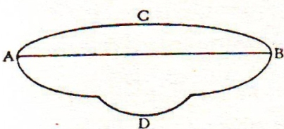
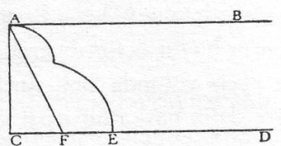
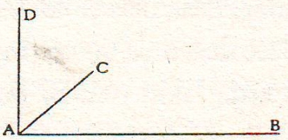
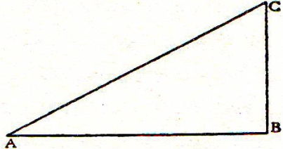
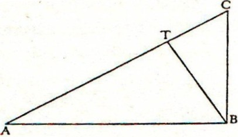
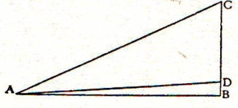

(Konuşmacılar: Salviati, Sagredo ve Simplicio)
Salviati – Dünkü buluşmamızda kararlaştırdığımız gibi, bugün bir araya gelerek Aristoteles ile Batlamyus (Ptolemaios) görüşünün taraftarları ve Copernicus Sistemi taraftarlarının doğada yer alan olguların nedenleri ve etkileri hakkındaki fikirlerini mümkün olduğunca açık ve seçik olarak ele alıp aramızda konuşmaya başlayalım. Copernicus, Arz’ı gökyüzünde hareket eden cisimler arasına yerleştirerek böylece Yerküre’yi de gezegenler arasına kattı. Bu durumda bu varsayımı peripatetikçilerin tamamen imkânsız bulduklarını ispat yolunda yürüttükleri fikirlerin ne denli güçlü olduğunu ele almakla işe başlamamızın doğru olacağı kanısındayım. Bunun için doğada, aralarında yapı farkı bulunan cisimler yani göksel ve yersel cisimler diye bir ayrıma başvurarak göksel cismi ebedi ve bozunmaz, yerel cismi ise bozunur ve yok olur kabul etmeliyiz. Aristoteles bu konuyu De Coelo (Gökyüzü) kitabında ele alıyor ve bazı genel varsayımlara dayanarak takdim ediyor, sonra da özele indirgenmiş deneyler ve kanıtlarla doğruluyor. Ben de aynı düzeni gözeterek önerimi söyleyeceğim, sonra da kanaatimi belirteceğim. Bunu yaparken fikirlerimi sizin sıkı denetiminize sunacağım ve özellikle de Aristoteles doktrininin şampiyonu ve destekleyicisi Bay Simplicio’nun sıkı denetiminden geçirmeye çalışacağım.
Aristoteles, Dünya sadece bir çizgi değildir ne de sırf bir yüzeydir; fakat uzunluk, genişlik ve derinlik unsurlarıyla donanmış bir cisimdir diyerek, yeryuvarlağının bütünlüğü ve mükemmelliğini ortaya koyarak peripatetikçi ilk ileri adımı atmış oluyor ve boyutlar üç boyuttan ibarettir, Dünya da bu üç boyuta sahip olduğundan mükemmeldir diyor. Sonra da çizgi denen o uzunluk ölçüsüne genişlik eklenince yüzey oluştuğunu, bu unsurlara da yükseklik ya da derinlik eklenince cisim oluştuğunu söylüyor; üç boyuttan başka boyuta yer vermemesi ile bütünlüğü bu üç boyuta indirgeyerek tüme ulaşması durumunu Aristoteles’in açık seçik kanıtlamış olmasını isterdim.
Simplicio – Aralıksız sürekliliğin tanımlanmasından sonraki ikinci, üçüncü ve dördüncü paragraftaki güzelim gösterimlerde eksiklik mi var demek istiyorsunuz? Siz üç boyuttan başka boyut olmadığını esasta kabul etmiyor musunuz? Çünkü “üç” her şey demektir ve “üç” tüm boyutun her yanını içerir. Hem sonra her şeyi belirleyen 3 sayısıdır fikrine yer veren Pythagorasçılar değil midir? Yani başlangıç, gerekçe, sonuç. Bu da bütünü ifade eden sayı değil midir? Peki siz diğer nedeni unutuyor musunuz? Tanrılara sunulan kurban sayısının, neredeyse bir doğa kanunuymuşçasına, hep üç olduğunu bilmiyor musunuz? Doğa bunu emrettiği için değil midir ki bütünü ancak 3 sayısı oluşturur ve üçten eksik olan bir bütün oluşturamaz; çünkü bir şeyin 2 adedi varsa “her ikisi” deyimine ihtiyaç duyulur. Bu deyim de iki sayısının bir bütünlük ifade etmediğini anlatır. Ama 3 sayısı bütünlük ifade eder. Tüm bu fikirleri 2 no’lu metinde bulabilirsiniz. Sonra 3 numaralı metinde tam bilimsel olarak şuna rastlayabilirsiniz: Tümü ifade eden her şey mükemmeldir, bütün ve mükemmel olan bir şey şekilde birleşir ve aynı şey olurlar. Bu nedenle büyüklükler arasında yalnızca cisim mükemmeldir; çünkü yalnızca o 3 sayısıyla belirlenmiştir ve bütünü oluşturmaktadır ve 3’e bölünebildiği için üç yönden bölünebilirlik özelliği taşımaktadır. Oysa diğerleri, kimi bir yönde, kimi iki yönde bölünebilir. Bunun sonucu olarak isabet eden sayıya göre bölünme ve devamlılığa sahiptirler. Böylece kimi bir yöne, kimi iki yöne doğru bölünmüşlük devam eder, fakat diğeri yani cisim hepsine sahip kılınmıştır. Ayrıca 4. metinde birkaç doktrine yer verdikten sonra, aynı şeyi başka bir yoldan sıkı sıkıya kanıtlamıyor mu? Hep bir eksiklik tamlamasını gerektirir çizgiden yüzeye geçmek... Çünkü çizgi tek başına, genişlikten yoksundur ve mükemmel de eksiklik kabul etmediği için cisim her üç boyuta sahip bulunmalıdır ki buradan da daha başka bir büyüklüğe geçilemez artık. Bu noktadan hareketle uzunluk, genişlik ve derinlik boyutlarından başka bir boyuta geçilemeyeceğinden ve cisim de buna sahip bulunduğundan, mükemmel sayılacağını yeterince kanıtlamış olmuyor mu acaba?
Salviati – Doğruyu söylemek gerekirse ben yaptığınız tüm bu konuşma karşısında yalnızca başlangıç, gerekçe ve sonuç üçlüsü için mükemmel sözcüğünün kullanılabileceğini sanıyorum. Başka bir vesile için 3 sayısını kabul etmeye beni ikna edemezsiniz. Öte yandan başlangıç, gerekçe ve sonuç 3 sayısına bağlandı diye 3 sayısına mükemmelliği yakıştırmaya ve 3 sayısına sahip her şeye mükemmel demeye yanaşmak mümkün değil. Üstelik şu kanıdayım ki örneğin bacakların sayısında 3’ün 4’ten ya da 2’den daha uygun düştüğünü sanmıyorum. Hem sonra sayısı 4 olan elementler için 4 sayısı uygun değildir diyemeyiz. Element sayısı 3 olsa daha mükemmel olurdu da diyemeyiz. Bu gibi muğlak konuları belagat sahibi kişilere bırakmalı, niyetini gerekli kanıtlarla ortaya koymalıydı. Gösterimli ve ispatlı bilimlerde bu yöntem uygulanır.
Simplicio – Benim öne sürdüğüm nedenleri şakaya alıyor gibisiniz ama Pythagorasçılar sayılara büyük önem veriyorlardı, sayılara önem vermeyi bir doktrin haline getirmişlerdi. Siz ki matematikçisiniz ve çoğu fikirlerinizde Pythagorasçı bir filozof sayılırsınız; şimdi kalkmış, sayıları önemsememekte diretiyorsunuz.
Salviati – Pythagorasçıların sayılar bilimini en yüksek düzeyde bir takdirle önemsediklerini, Platon’un insan zihnine hayranlık duyduğunu ve onu, sırf sayıların doğasına akıl erdirdiği için, Tanrısallığın bir parçası kabul ettiğini ben pekâlâ biliyorum ve ne de aynı kanaate sahip olmaktan uzak biriyim. Fakat Pythagorasçıları ve müritlerini, sayılar bilimine taparcasına ona üstünlük tanımalarına sevk eden gizlerin, halkın dilinde dolaşan ya da elindeki oyun kâğıtlarına yakıştırılan saçmalıklarla eş sayılması diye bir durumu kesinlikle kabul edemem. Hatta hayranlık duyulması gereken şeylerle ilgili, halkın küçümsemesi ve hor görmesi gibi bir durumla karşılaşılmasın diye, kendileri tarafından en gizli yönleri araştırılan sayılara ve ölçümlere yatkın olmayan irrasyonel miktarlara ait sırların açıklanmasını kutsallığa büyük saygısızlık saydıklarını biliyorum; bu gizleri açıklayanların öbür dünyada eziyet gördükleri fikrini yaydıklarını da bildiğimden öyle sanıyorum ki Pythagorasçılardan biri, halkın sorularından sıyrılmak ve halk yığınlarının ağzına sakız olmasın diye halka kasten, sonradan insanlar arasında yayılmış olan hafiflikleri fısıldamışlardır. Aralarından biri, bunu öyle usturuplu biçimde yapmış ki başvurduğu yöntem, senatonun sırlarını kendisine aktarmasını ısrarla isteyen annesinden mi ya da çok meraklı karısından mı kurtulmaya çalışan genç ve zeki bir senatörün uygun bir hikâye uydurması kurnazlığına bile varmıştır. Senatör öyle bir hikâye uydurmuştu ki[5] sonradan bu yayıldığında kadınlar, senatoda bile kahkahalarla karşılanan alayın kurbanı olmuşlardı.
Simplicio – Ben, Pythagorasçıların sırlarına fazlaca merak duyanların grubuna dahil edilmek istemiyorum; fakat tartışmamızın çerçevesi dahilinde kalarak şu yanıtı vermek isterim ki Aristoteles’in boyut üçtür diyerek üçten fazla boyut olamayacağını ispat yolunda öne sürdüğü gerekçeler bence yeterlidir. Eğer daha başka bir ispat gerekseydi buna da başvurmaktan geri kalmazdı.
Sagredo – Eğer bilseydi ya da aklına gelseydi diye ekleseniz daha doğru olur. Bu arada siz Bay Salviati, eğer benim anlayabileceğim gibi bir fikir yürütebilirseniz çok memnun olurum.
Salviati – Yalnız sizin değil, Bay Simplicio’nun da anlayabileceği gibi sunacağım; hatta anlaşılmadık demeyeyim, zaten bilinip de akla gelmemiş olabilen diyeyim. Açıklaması kolay olsun diye bir kalem ve kâğıt alalım. Bu gibi durumlar için hazırlıklı olma açısından kâğıt ve kalem zaten hazır, şuracıkta görüyorum, alıp bir iki şekil çizelim.

Şekil 1- Şekil çizimine fazla yer vermeyen Galileo, burada, AB noktaları arasındaki en kısa mesafenin bir doğru olduğunu gösteriyor.[*3]
Önce A, B diye iki nokta belirleyelim ve her iki noktadan itibaren ACB, ABD eğrileriyle AB doğrusunu çizelim. Şimdi soruyorum, sizin zihninizde, bu çizgilerden hangisi A ve B noktaları arasındaki mesafeyi belirleyen çizgidir? Neden?
Sagredo – Bence düz çizgi, eğriler değil. Çünkü doğru en kısa yoldur. Evet, çünkü bu tek çizgidir, belirlidir ve bu tek çizgiden başkası çizilemez; oysa diğerleri sonsuz sayıda, kimi daha uzun, kimi eşit olmayan şekilde, sonsuz denecek kadar çok sayıda çizilebilir ve belirlilik bir tek ve kesin olan çizgiden doğmaktadır.

Şekil 2- Uzunluğu ifade eden AB çizgisine paralel CD çizgisiyle genişliği ekliyor: AC dikey çizgisi.
Salviati – Demek ki iki nokta arasındaki uzunluğun belirleyicisi olarak biz düz çizgiyi alıyoruz. Şimdi de AB doğrusuna paralel bir düz çizgi daha çizelim: bu da CD’dir. Bu iki paralel çizgi arasında bir yüzey oluşmuş olsun ve siz bu yüzeyin genişliğini veriniz. Söz konusu iki düz çizgi arasındaki genişliği CD çizgisi üzerinde hangi noktaya, nasıl dayamak isteyeceksiniz? Yani AE eğrisi olarak mı yoksa AF düz çizgisiyle mi belirleyeceksiniz? Ya da...
Simplicio – AF düz çizgisiyle belirleyebiliriz; AE eğrisiyle değil. Çünkü bu gibi durumlarda eğriler çalışmamıza uymaz.
Sagredo – Ben ne birini ne de ötekini kullanırdım. Çünkü AF düz çizgisi eğik bir çizgidir, ben CD çizgisine tam dikey bir çizgi çekerdim. Çünkü bu dik çizgi A noktasından karşısındaki CD çizgisine çekilebilecek ve hepsi de birbirine eşit olmayacak çizgiler arasında, en kısa ve biricik çizgi olacaktır.
Salviati – Sizin seçiminizi ve bu seçimi dayandırdığınız nedeni çok doğru buluyorum: Böylece şu ana dek edindiğimiz bilgiler, birinci boyutu düz bir çizginin belirlediğini; ikinci boyutu da (yani genişliği) yine bir başka düz çizginin, ama bu düz çizgi yalnızca düz olmakla kalmayıp aynı zamanda uzunluğu belirlemiş olan düz çizgiyle dikaçı oluşturan, bir çizginin belirlediğini bize göstermiş bulunuyor. Fakat siz bir yüksekliği belirlemeniz gerektiğinde, örneğin ayağınızın altındaki şu döşemeden tavana olan yüksekliği belirlemeniz icap ettiğinde, tavanın herhangi bir noktasından aşağıya doğru ve istediğiniz noktaya, sonsuz sayıda, ister düz ister eğri çizgi çizebilirsiniz ve bu çizgilerin hepsi de birbirinden farklı uzunlukta olacaktır. Peki bu çizgilerin hangisinden yararlanacaksınız?
Sagredo – Ben tavandan aşağıya doğru bir ip sarkıtır ve bu ipin aşağıdaki ucuna ağırlık olarak bir kurşun parçası asarak, tavandan döşemeye doğru gerilmeye bırakırdım. İşte, kanaatimce bu ipin uzunluğu, aynı noktadan döşemeye çizilebilecek ne kadar çizgi varsa hepsinin en düzü ve en kısası olması itibariyle odanın gerçek yüksekliğini gösterecektir.
Salviati – Peki siz, yukarıdan sarkan çekülün döşemeye (döşemenin düz olduğunu, eğimli olmadığını düşünüyoruz) değdiği noktadan itibaren, döşeme yüzeyinin uzunluğunu ve genişliğini ölçmek üzere iki düz çizgi çekseniz, bunlar iple nasıl bir açı oluştururlar?
Sagredo – Muhakkak dikaçı oluştururlar; çünkü tavandan sarkıtılan çekülün ucuna bağlanmış bir kurşun var ve döşemeyi de düz kabul ediyoruz.

Şekil 3- Uzunluğu AB, genişliği AC olan bir alana balkondan aşağı sarkıtılan çekülle tavandan döşemeye çekilen çizgi AD yüksekliğidir.
Salviati – Demek oluyor ki siz ölçümlere başlangıç ve bitiş için herhangi bir nokta saptayıp, buradan itibaren ölçümlerin ilk belirleyicisi olarak uzunluğu belirlemek üzere düz bir çizgi çekerseniz, genişliği saptayıcı çizginin mecburen bu düz çizgiyle dikaçı oluşturacak biçimde çekilmesi gerekecektir. Üçüncü boyutu belirlemek üzere aynı noktadan hareketle çizilişi gereken üçüncü çizgi de diğer iki çizgiyle dikaçı oluşturmalıdır. Dikaçıdan başka bir açı oluşturmaması gerekir: Böylece yalnızca üç tane, kesin ve en kısa yolu ifade eden dikey çizgiler olmaları itibariyle, şekildeki AB uzunluk, AC genişlik, AD yüksekliğin belirleyicisidirler. Aynı noktaya bu üç çizgiyle dikaçı oluşturacak başka hiçbir çizgi çizilemeyeceğine göre ve aralarında dikaçı oluşturan çizgilerden başka hiçbir çizgi, boyutları itibariyle rakip olamayacağından, demek ki boyut sayısı ancak 3’tür; 3’ten fazla olamaz. Hangisi 3 boyuta sahipse hepsine sahiptir. 3 boyutu olan bir şey mükemmel olup her yandan bölünebilirlik özelliği taşır.
Simplicio – Kim demiş başka çizgi çizilemez diye? Ben A noktasına dik bir çizgiyi, diğer 3 çizgiye dikey biçimde alttan çizemez miyim?
Salviati – Tek bir noktaya üç dikey çizgiden başka çizgiyi, yine kendi aralarında dikaçı oluşturacak biçimde çekemezsiniz.
Sagredo – Sanırım şunu demek istiyor Bay Simplicio: DA çizgisi aşağıya doğru uzatılabilir. Böyle olunca diğer iki dikey çizgi de aşağıya yönelik uzatılabilir. Fakat bunlar ele almış bulunduğumuz eski üç çizginin uzantıları olur ki değişik bir durum ortaya çıkmaz. Olsa olsa şimdi tek bir noktada birleşerek birbirine sadece değen üç dikey çizgi aşağıya uzatılınca birbirleriyle kesişirlerdi; fakat yeni bir boyut yaratmazlardı.
Simplicio – Sizin öne sürdüğünüz gerekçe geçersizdir demeyeceğim ama şunu söylemek istiyorum, Aristoteles’in dediği gibi: Doğa olgularında her zaman matematik yoluyla ispatlama gereğine başvurulmamalıdır.
Sagredo – Evet, ispat sağlanamayacak durumlar için belki, ama bizim örneğimizde ispat mümkünken neden yararlanmayalım? Fakat bu ayrıntılarla daha fazla vakit kaybetmesek iyi olur, çünkü sanırım Bay Salviati Aristoteles’e ve size, herhangi bir kanıtlamaya da gitmeden, Evren’in mükemmel, pek mükemmel bir cisim olduğunu, bunun Tanrının en büyük eseri olarak böyle olduğunu kabul ettiğini ifade edecektir.
Salviati – Gerçekten öyle. Fakat bütüne ait genel temaşayı bir kenara bırakarak kısımları ele alalım. Aristoteles kısımları, ilk ayırımında iki olarak gösteriyor ve bu iki kısmı birbirinden çok farklı ve bir bakıma birbirine zıt şeyler olarak sunuyor; göksel ve elementsel ayrımı kastediyorum. Göksel olan, yaratılmış olduğu gibi kalıcıdır, bozulmaz, değişmez, yok olmaz, vb.; fakat beriki sürekli değişim, başkalaşım vb. geçirir. Bu farklılığı Aristoteles, temel ilke olarak kabul ettiği farklı bölgelerin kendilerine özgü hareketlerine dayandırıyor ve bu görüşe bağlı olarak yoluna devam ediyor.
Duyulara hitap eden dünyadan, söz gelişi uzaklaşıp ideal dünyaya çekilerek, yapısal açıdan Evren’e bakıyor ve “doğa demek hareket demektir” görüşüyle, doğa cisimlerinin kendilerine ait bölgedeki hareket ilkesine bağlı biçimde deviniyor olmaları gerektiği sonucuna varıyor. Doğadaki cisimleri yerel hareket ilkesine bağlı hareketli cisimler olarak niteledikten sonra bu hareketlerin üç çeşit olduğunu söylüyor: dairesel, doğrusal ve bu ikisinin karışımından meydana gelen birleşik hareketler. İlk iki hareket için bunlar yalın hareketlerdir diyor. Çünkü, diye ekliyor, tüm çizgilerden yalnızca dairesel ve doğrusal olanlar yalındır. Buradan da epey özel durumları göz önünde tutarak yalın hareketlerden biri olan dairesel hareketi tanımlamaya geçerek, bunun bir merkez etrafında yapılan hareket olduğunu söylüyor; doğrusal hareket ise yukarıya ve aşağıya doğru olur diyor. Yukarıya yönelik hareket, merkezden yukarıya doğru olandır; aşağıya yönelik hareket merkeze doğru olan harekettir. Buradan da yalın hareketlerin hepsinin üç tür hareketten ibaret olduğunu yani merkeze, merkezden ve merkez etrafında olduğunu belirtiyor. Bu durum, diyor Aristoteles, az önce cismin yapısı hakkında söylenenlerle uyum içindedir; şöyle ki cismin mükemmelliği de üç unsurdan oluşuyordu, cismin hareketini de üç unsur oluşturuyor. Bu hareketleri saptadıktan sonra şöyle devam ediyor: Doğa cisimlerinden bazıları yalın ve bazıları da birleşik olduğundan (hareketleri doğadan kaynaklanan ateş, toprak gibi cisimleri “yalın” cisimler diye adlandırıyor), yalın hareketler yalın cisimlere, birleşik hareketler de birleşik cisimlere yaraşır. Öyle ki birleşiğin içinde hangi madde diğer maddeden fazlaysa birleşik hareketi yönlendiren o olur diye ekliyor.
Sagredo – Lütfen Bay Salviati, biraz durur musunuz? Çünkü anlattıklarınızı takip ederken birçok açıdan o kadar kuşku yaratan şeyler duydum ki bunları ya söylemeliyim ve bu sayede ekleyeceğiniz bilgileri dikkatle izlemeliyim ya da kuşkularım zihnimi meşgul edeceğinden, anlatacaklarınız üzerinde dikkatimi toplayamayacağım.
Salviati – Memnuniyetle duraklayacağım, çünkü ben de benzer bir şanssızlıkla karşı karşıyayım ve bir noktadan öbür noktaya geçeyim derken kaybolmak üzereyim; öyle tehlikeli kayalıklar ve dalgalar arasında dolaşıyorum ki deyim yerindeyse pusulamı kaybettirmek üzereler... Neyse, siz kuşkularınız daha fazla birikmeden zorluklarınızı açıklayınız.
Sagredo – Siz Aristoteles’le birlikte, başlangıçta duyulara hitap eden dünyadan beni bir hayli uzaklaştırıp Dünya’nın yapısal temelinin dayanması gerektiği doğal tasarımına işaret etmek istemiştiniz. Doğa cisminin, doğası gereği hareket sahibi olduğunu, zaten bir başka yerde de doğa demek hareket demektir tanımlamasına yer verilmiş olması nedeniyle, anlattıklarınızı epey zevkle dinlemeye koyulmuştum. Bu noktada biraz şüpheye düştüm. O da şundan ötürü: neden Aristoteles, doğa cisimlerinden bazıları doğa gereği hareketlidir ve bazıları da hareketsizdir demedi acaba? Oysa tanımlamada doğa hareket ve durağanlık ilkesine dayanır ifadesi var. Şimdi şöyle bir ikilem söz konusu: Şayet doğa cisimlerinin hepsi hareket ilkesine sahipse ya doğaya ilişkin tanımlamaya durağanlık halini koymamak gerekirdi ya da bu tanımlamaya burada yer verilmemeliydi. Sonra, Aristoteles’in yalın hareketten hangi hareketleri anladığı ve bunları, mekân kat etme durumuna göre nasıl belirlediği konusundaki fikrini nasıl algılamam gerektiği noktasına gelince: Aristoteles yalın hatlar boyunca gerçekleşen hareketleri yalın hareketler olarak niteliyor ve bunları dairesel ve doğrusal olarak kabul ediyor.
Onun bu dediklerine pek itiraz ettiğim yok; hatta bir silindir etrafında çizilen spiral hareketin, sürekli kendini aynen tekrarlaması bakımından üstünde durabileceğim halde, ince eleyip sık dokumaktan vazgeçip itiraza girişmeden, bunun yalın çizgi sayılmasına da bir şey demiyorum. Fakat tanımlamasının sınırlarını daha belirgin yapmak istercesine yalın hareketlerden biri merkez etrafında olandır, diğeri de yukarı ve aşağı doğru (sursum et deorsum) olandır diye ifade etmesine epey içerledim. Çünkü, bu terimler, insan eliyle meydana getirilen dünyanın yapısı sanki doğal Dünya yapısıyla aynıymış gibi kullanılıyor ve insan eliyle meydana getirilmiş dünya dışında bir durum hesaba katılmıyor. Eğer doğrusal hareketin yalınlığı, düz hattın yalın oluşundan ötürüyse ve eğer yalın hareket doğada mevcutsa, bu hareket ister yukarıya, ister aşağıya doğru; ister öne veya arkaya doğru, ister sağa veya sola doğru ve aklınıza başka bir hat gelebiliyorsa öyle olsun, yeter ki düz olsun, bu hareketin doğadaki bir yalın cisme ait olması gerekir. Aksi halde Aristoteles’in önermesi eksiktir. Ayrıca, Aristoteles Dünya’da tek bir dairesel hareketin mevcudiyetine işaret ediyor ve bunun sonucu olarak bir tek merkez vardır diyerek aşağıya ve yukarıya hareketlerin bu merkez esas alınmak suretiyle değerlendirildiğini belirtiyor. Tüm bunlar, Aristoteles’in elindeki kâğıtları elçabukluğuyla değiştirmeyi planladığına, insan eliyle inşa edilen yapıyı doğanın yapısına uygun kurmak yerine, doğanın kuruluş yapısını öbür yapıya uydurmayı hedeflediğine işarettir. Çünkü eğer ben, doğanın bütününde bin tane dairesel hareket vardır ve bunun sonucu olarak da bin adet merkez olur diyecek olsam, yukarıya ve aşağıya doğru yine bin tane hareket olacaktır. Ayrıca, belirtildiği gibi o, yalın ve birleşik hareketler diye bir ayırım yapıyor ve dairesel hareketle doğrusal hareket karışımını yalın hareket diye nitelendirerek, bunların ikisinin birleşmesinden oluşan hareketi de birleşik hareket olarak niteliyor; doğadaki cisimlerden bazılarına yalın (yani yalın hareket ilkesine doğaları gereği bağlı olanlar) ve bazılarına da birleşik adını veriyor. Yalın hareketleri yalın cisimlere, birleşik hareketleri de birleşik cisimlere uygun görüyor. Fakat birleşik hareketle, Dünya’da var olabilecek doğrusal ve dairesel hareket karışımı birleşik hareketi değil de öylesine imkânsız bir melez hareket ortaya atıyor ki aynı doğru üzerinde birbirine karşıt ve böylece kısmen yukarıya kısmen aşağıya iki hareketin karışımı gibi imkânsız bir şey çıkıyor karşımıza. Böylesine büyük uyumsuzluğu ve imkânsızlığı yumuşatmak için de birleşik cisimlerin içindeki maddenin hangisinin miktarı fazlaysa ona göre hareket eder diyor. Bu durumda itiraz olarak şunu demek gerekir ki aynı doğru üzerindeki hareket bazen yalın bazen de birleşik olacaktır, öyle ki hareketin yalınlığını yalnızca hattın yalınlığına bağlamak mümkün olmuyor artık.
Simplicio – Eğer yalın ve mutlak hareket, birleşik cisimde üstünlüğe sahip olan kısmından ötürü daha hızlıysa bu fark sizce yeterli değil mi? Sorarım size, yere doğru inen bir avuç toprak parçası mı yoksa bir tahta parçası mı daha hızlı düşer?
Sagredo – İyi ama Bay Simplicio, eğer yalınlık bu nedenden ötürü değişikliğe uğruyorsa melez yüz bin hareketin söz konusu olması bir yana, siz bunlar arasında yalın olanı belirleyemeyeceksiniz; üstelik eğer hızın artması ya da azalması hareketin yalınlığını değiştirebiliyorsa hiçbir yalın cisim yalın biçimde hareket etmiş olmayacak. Çünkü tüm doğa cisimlerinin düşey iniş hareketlerinde hız giderek artar ve bu da yalınlık niteliği sürekli değişiyor demektir. Oysa yalınlığın korunabilmesi değişmezliği gerektirir ve daha da önemlisi siz Aristoteles’in durumunu zorlaştıran bir laf da ederek onun birleşik hareketler hakkında sözünü etmediği hız artışı-hız yavaşlaması gibi durumları gerekli görüyor, bunu şart koşuyorsunuz. Nitekim Aristoteles hızın artması ya da azalması diye bir şeyden söz etmediği halde siz şimdi bunu gerekli ve şart olarak öne sürüyorsunuz. Şunu da eklemeliyim ki siz bu kuraldan bir avantaj sağlayamazsınız; çünkü birleşik harekete sahip cisimlerden öyleleri olacak ki bunlar arasından birçoğu yalın hareketten daha yavaş ve daha hızlı iniş yapacaklardır: örneğin kurşunun toprağa tahta parçasına kıyasla inişi gibi... Hangisine yalın, hangisine birleşik diyebileceksiniz?
Simplicio – Yalın hareket diye, katışıksız yalın cisim tarafından yapılan harekete denecektir ve birleşik cismin hareketi de birleşik hareket olacak.
Sagredo – Pes doğrusu, siz neler söylüyorsunuz Bay Simplicio? Az önce bana, yalın hareketin ve birleşik hareketin, hangi cisimlerin katışıksız ve hangisinin katışıklı olduğuna rehberlik etmesini öneriyordunuz; şimdi de istiyorsunuz ki bir cismin sade ya da katışıklı oluşuna göre yalın hareket sahibi mi yoksa birleşik hareket sahibi mi olduğuna karar vereyim. Pes doğrusu, ne hareketleri ne de cisimleri asla belirleyememek için çok güzel bir kural sunmuş oldunuz. Yalın hareket tanımlaması için siz, hız üstünlüğünün artık yeterli olmadığını ifade etmekle, Aristoteles’in kat edilen hattın yalınlığından başka bir şart öne sürmemesine karşılık üçüncü bir şart getiriyorsunuz; fakat şimdi, sizin söylediklerinizden anladığımıza göre, bir hareketin yalın olması için bir yalın çizgide, belirli bir hızla yapılması ve hareket halindeki cismin katışıksız saf bir cisim olması gerekli. Sizin hoşunuza nasıl gidiyorsa öyle olsun ama biz şimdi Aristoteles’e dönelim. Aristoteles birleşik hareket, doğrusal ve dairesel hattan oluşan harekettir diye tanımlıyor. Tanımlamasına tanımlıyor da böyle bir harekete sahip bir cisim doğada var mı acaba; bunu gösteremiyor bizlere.
Salviati – Evet, ben Aristoteles’e dönüyorum. Düşüncesini açıklamaya pek güzel ve metodlu başlıyor, fakat mantıklı düşüncesinin onu götüreceği noktaya ulaşmak yerine önceden zihninde saptadığı bir hedefe varmayı amaçladığından, çapraz bir çıkışla fikir silsilesini bozarak, yukarıya ve aşağıya doğru olan doğrusal hareketlere doğada ateşin ve toprağın sahip olduğunu ve fakat bizim yaşamımızın içinde yer alan bu cisimlerden başka doğada dairesel harekete uygun bir başka cismin daha var olması gerektiğini söylüyor ve şunu ekliyor: Dairesel hareketin doğrusal harekete ne denli üstün bir mükemmelliği söz konusuysa dairesel hareket sahibi cisim de o denli mükemmelliğe sahiptir. Onun bundan ne kadar daha mükemmel olduğunu, dairesel hattın doğrusal hatta kıyasla mükemmel oluşuna bağlıyor ve ona mükemmel buna da gayrimükemmel diyor. Gayrimükemmeldir çünkü doğrusal hareket sonsuza uzanır ve sonsuza uzanırsa sonu olmayan, bitim noktası bulunmayan demektir. Eğer sonlu, bitimi olan hat söz konusuysa kendisinin ulaşabileceği bir şey var demektir. Bu söylediği Aristoteles’in Evren’inin tüm yapısının temeli, temeltaşı, esasıdır ve göksel cisimlerin tüm diğer özellikleri bu temele oturtulmuştur: Göksel cisimler ne ağırlık ne de hafiflik sahibidirler; yaradılışlarındaki gibi hep aynı kalırlar, bozulmazlar, bozunmazlar, değişimsizdirler, bizim içinde yaşadığımız yerin dışındaki yörededirler vb. Tüm bu tutkuların yalın bir cisme, dairesel hareket sahibi yalın bir cisme özgü olduğunu ifade ediyor ve ekliyor: tüm bu özelliklere zıt şartlar olan ağırlık, hafiflik, bozulma, üreyiş, bozunma gibi özellikler doğadaki doğrusal hareket sahibi cisimlere aittir. Eğer şu ana kadar söylenenlerde bir eksiklik fark edilirse bu söylenenler üstüne kurulacak olan bundan sonraki anlatımlardan haklı olarak şüphe duyulabilir. Aristoteles’in buraya kadar evrensel ve birincil ilkelere bağlı olarak öne sürdüğü görüşlerinin ileride anlatacaklarımız arasında özel nedenler ve deneyler dolayısıyla ele alınacağını inkâr etmiyorum. Zaten o fikirlerin hepsinin teker teker ele alınması ve üzerinde düşünülmesi gerekmektedir; ne var ki şu ana dek söylenenler, büyük zorluklar sergilediği için (oysa birincil ve temel ilkeler sağlam ve iyi oturmuş olmalıdır ki onlar üstüne kararlılıkla bir fikir binası inşa edilebilsin) şüpheler birikimi yığılma yapmadan acaba başka bir yol izleyip daha düzgün ve güvenli yolda yürüyerek, iyice düşünülmüş bir mimari planla birincil temelleri daha sağlam atsak çok daha iyi olmaz mı diyorum. Bu nedenle Aristoteles’in çizdiği yolu şimdilik bir kenara bırakıp sırası geldikçe ele alacağımızı ve fikirlerini teker teker irdeleyeceğimizi belirterek şimdiye dek söylediklerinden onunla mutabakat halinde bulunduğumuzu kabul ettiğim noktanın altını çizmek istiyorum: Dünya tüm boyutlara sahiptir ve bundan ötürü de çok mükemmel bir cisimdir. Şunu da ekliyorum: bu durumu nedeniyle çok büyük bir düzen içindedir; şu anlamda ki onu meydana getiren kısımlar, kendi aralarında tam anlamıyla ve mükemmel bir düzene sahiptirler. Bunu böyle kabul etmemizi, sanırım ne siz ne de başkaları ret ve inkâr edebilirler.
Simplicio – Kim itiraz edebilir ki? Her şeyden önce Evren hakkındaki bu fikir Aristoteles’e aittir; ayrıca şu da var, Evren’in böyle nitelenişi sahip bulunduğu mükemmel düzenden ileri gelmektedir.
Salviati – Demek ki bu ilkeyi saptadıktan sonra hemen şu sonuca varabiliriz: Eğer Evren’in bütününü oluşturan kısımlar doğaları gereği hareketli olmak zorundalarsa düz hatlı ya da daireselden başka bir harekete sahip olması imkânsızdır. Bunun nedeni de çok kolay ve açıktır: Şöyle ki doğrusal hareketli bir cisim yer değiştirir ve hareketini sürdürdükçe geçtiği noktalardan giderek uzaklaşır; eğer bu hareket doğa gereği ona uygun düşüyorsa demek oluyor ki başlangıçta bu cisim doğanın ona uygun gördüğü yerinde değilmiş ve bu nedenle de diyebiliriz ki Evren’in kısımları mükemmel bir şekilde yerli yerinde değilmişler. Fakat biz, onların mükemmel bir şekilde düzenli olduklarını varsayıyoruz. Böyle olunca, doğa gereği yer değiştirmek zorunda olduklarını söylemek imkânsızdır. Yani doğrusal harekete zorunludurlar diyemeyiz. Ayrıca doğrusal hareket, doğası gereği sonsuza yöneliktir. Çünkü düz çizgi sonsuza ve belirsize yöneliktir, herhangi bir hareketli cisim, doğa gereği bir doğru boyunca hareket etme ilkesine bağlıdır yani ulaşılması imkânsız bir yere doğru gitme ilkesine bağlıdır diye bir şey söylememiz imkânsızdır. Çünkü varacağı son nokta belirlenmiş değildir ve doğa, Aristoteles’in kendisinin de çok iyi belirttiği gibi, yapılması mümkün olmayan şeye girişmez ve varılması imkânsız bir yere doğru harekete de girişmez. Eğer bir kimse çıkıp, doğrusal çizgi ve dolayısıyla düz hat boyunca hareket sonsuza doğru yani belirsiz bir yere doğru sürdürülebilir ve böylece doğa, söz gelimi onlara özellikle belli bazı son uçlu noktalar belirlemiştir ve cisimlere o son uçlara doğru gitmek üzere doğal yetenekler tanımıştır diyecek olsa, bundan ötürü benim onlara vereceğim cevap şu olur: Dünya’nın başına böyle bir şey ancak, yaratılışının ilk karmaşasında; maddenin belirli kategorilere ayrışmadan, aralarında karmakarışıkken, düzensiz uçuştuğu ilk kaosta gelmiş olduğu hikâye edilebilir belki. Ola ki doğa maddeyi bu durumdan düzene dönüştürmek için doğrusal hareketlerden, ilk yerleşim için yararlanmıştır. Doğrusal hareketler nasıl ki yerli yerine yerleşmiş cisimleri düzenden uzaklaştırıyorsa kaba bir düzensizlik içindeki maddeyi de derleyip toparlamaya yatkındırlar. Fakat cisimler en güzel biçimde dağılım ve yerleşim aşamalarını geride bıraktıktan sonra onlarda, doğrusal harekete sahip olma doğal eğiliminin kalmış bulunması imkânsızdır. Şimdi artık onların kendilerine ait doğal yerlerden, yeniden doğrusal hareketle kımıldamalarının söz konusu olması ancak düzenden çıktıkları durumlarda geçerlidir. Demek ki şunu söyleyebiliriz: Doğrusal hareket, eserin yaratılışında maddeyi yerine yerleştirmek için yararlanılan bir harekettir; fakat eser meydana getirildikten sonra artık madde ya hareketsizdir veya hareketliyse de ancak dairesel harekete sahiptir. Ama biz eğer Platon’a uymak istemiyorsak ve demek istemiyorsak ki Evren’in cisimleri yaratıldıktan ve kararlı bir hal aldıktan sonra, yaratıcısı tarafından bir süre için doğrusal harekete kavuşturuldular, fakat belirli ve kesin yerlere ulaşmalarını müteakip teker teker döndürülmeye başladılar, doğrusal hareketten dairesel harekete intikal ederek ve böylece kaldıkları ve halen de kalmaya devam ettikleri yerde varlıklarını koruyorlar, o takdirde Platon’a layık yüce bir fikir demekle yetinelim. Dostumuz Lincei Akademisi üyesinin[6] Platon’un bu düşüncesi hakkında fikirler ileri sürdüğünü hatırlıyorum. Söylediklerini iyi hatırlıyorsam, dostumuzun konuşması şöyleydi: Herhangi bir nedenle istirahat halinde olan fakat doğasında hareket etme niteliği bulunan her cisim, serbest bırakılınca hareket edecektir. Yeter ki belirli özel bir yere doğru gitme niteliği doğasında var olsun; çünkü tüm yerlere karşı tarafsız kalsa şu ya da bu yere doğru gitme nedeninden yoksun olduğu için sahip olduğu durağanlık halini bırakmazdı... Böyle bir eğilime sahip olmasından doğan mecburi sonuç, hızının sürekli artmasıdır ve çok ama çok yavaş bir hızla başlayacağından, cismin herhangi bir hız derecesi ancak önceden daha küçük hız derecelerinden geçmiş olmasıyla gerçekleşecektir. Ancak daha küçük hız derecelerinden geçmiş olmasıyla demektense daha büyük yavaşlık derecelerinden geçmek suretiyle diyebiliriz; çünkü cisim harekete istirahat halindeyken başladığından (ki buna hareketin azami yavaşlık derecesi diyebiliriz), bir önceki daha küçük hızdan ve hatta daha önce ondan da küçük hız derecesinden geçmeden, şu ya da bu miktar bir hız derecesi edinme zorunluluğunda değildir. Hatta cismin, önce hareketin başlangıcındaki hız derecesine daha yakın hız derecelerini kat ederek ve giderek de başlangıç hızının daha uzağındaki hız derecelerini kazandığını söylemek akla daha uygundur. Unutmamalıyız ki hareketli cismin harekete başladığı andaki hız derecesi azami yavaşlık halidir yani hareketsizlik anı ve istirahat halidir. Söylediğimiz bu durum itibariyle, cisim ivmeye, hareket boyunca kazandığı hızlanma sayesinde ulaşır. Yaklaşmak için arzu duyulan yere doğru gitmekten ötürü kazanılan bir hızdır sözünü ettiğimiz hız kazanımı yani cismi doğal eğiliminin götürdüğü yerdir ve cisim oraya en kısa yoldan yani doğrusal hat boyunca ulaşacaktır. Durumu aklın süzgecinden geçirerek haklı olarak diyebiliriz ki doğa, önce istirahat halinde olan bir cisme belirli bir hız kazandırmak için onu, bir süre için ve bir mekân boyunca doğrusal hareket ettirmekten yararlanıyor. Şu söylediklerimizi göz önünde tutarak Tanrının bir cisim, örneğin Jüpiter’i yarattığını ve ona belirli bir hız bahşedip bu tekdüze hızı ebediyen korumasını istediğini düşünelim: Platon gibi diyebiliriz ki başlangıçta bu cisme doğrusal hat boyunca hareket ederek ivme kazanması bahşedilmiş ve ardından da cisim öyle bir hıza kavuşmuş olmalıdır ki doğrusal hareket dairesel hatta çevrilmiştir ve cismin hızı artık doğal olarak hep bir karar kalacaktır.
Sagredo - Bu söylediklerinizi büyük bir zevkle dinledim ve zihnimi kurcalayan bir zorluğu giderdiğiniz takdirde, sanıyorum daha da fazla zevk alacağım. Bu zorluk şu: Nasıl olur da belirli bir yere gitme doğal eğilimindeki bir cisim, istirahat halini terk ettikten sonra, istirahat hali ve diğer herhangi bir hız derecesi arasındaki hız derecelerini hep bir önceki yavaşlık derecesinden geçmek mecburiyetiyle kat ediyor? Tüm bu yavaşlık derecelerinin sonsuz olduğunu da unutmayalım. Doğa neden Jüpiter adlı cisme, sahip olduğu şu kadarlık ve böylesi büyük dairesel hızı yaratılış anında hemen verememiş olsun?
Salviati – Sizin söylediğiniz o hızı, doğa ve Tanrı hemen o anda bahşedememiştir diye bir söz söylemedim ve söylemeye cüret edemem; fakat şunu diyebilirim ki doğa böyle bir şeyi fiilen (de facto) yapmamaktadır. Zaten yapsa doğanın izlediği yoldan çıkıp mucizeye girmiş oluruz. İstediğiniz kadar ağır bir cisim, istediği kadar büyük bir hızla hareket ederken *durağan haldeki herhangi bir cisimle rastlaştığında, rastladığı cisim pek az katı ve asgari dirençli de olsa ona hızını derhal aktarması hiçbir zaman mümkün değildir. Bunun açık belirtisi, rastlaşma sarsıntısının çıkardığı sestir. Bu ses duyulmazdı, daha doğrusu ses diye bir şey olmazdı eğer istirahat halindeki cisme, hızla gelen diğer cisim kendi hızını derhal, aynen aktarmış olsaydı...*
* Yıldız işaretleri arasındaki metin, sonradan Galileo tarafından mürekkepli kalemle eklenmiştir.
Sagredo – Demek oluyor ki siz şuna inanıyorsunuz: Bir taş parçası istirahat halinden kurtulup Yerküre’nin merkezine doğru doğal harekete başladığında, herhangi bir hız derecesinden önceki yavaşlık derecelerinden ve daha da önceki tüm yavaşlık derecelerinden geçiyor.
Salviati – İnanmak da laf mı? Bundan eminim. Sizi de ikna edebilirim.
Sagredo – Bugünkü yürüttüğümüz fikirlerden hiçbir şey kapmamış olsam bile şu son söyledikleriniz benim için en büyük kazanç sayılır.
Salviati – Söylediklerinizden anladığım kadarıyla sizin çektiğiniz sıkıntı, cismin kazandığı hız derecesi ne olursa olsun, o andaki hız derecesinden önceki bir süre zarfında, bu süre çok kısa da olsa bir önceki ve ondan da önceki tüm yavaşlık derecelerinden geçmiş olması gerçeğini anlama zorluğundan doğmaktadır. Bu durumda başka bir konuya geçmeden, sizin zihninizdeki bu merakı gidermeye çalışacağım. Bunu gidermek de kolay olacak eğer size şöyle bir cevap verirsem: Hareketli cisim, evet, sözünü ettiğimiz yavaşlık derecelerinin birinden ötekine geçiyor, fakat bu geçişler herhangi birinde duraklama olmadan sürüp gidiyor. Öyle ki geçiş bir anlık bir süreden fazla zaman gerektirmediğinden ve en kısa zaman dilimi bile tasavvur edemeyeceğiniz kadar sonsuz anlar kapsadığından, sonsuz sayıdaki yavaşlık derecelerinden her birine kendine ait anı tahsiste zorluk çekmeyiz. O bir anlık süre ne kadar kısa olsa da.
Sagredo – Bu noktaya kadar anlamakta zorluk çekmedim; buna rağmen şuna şaşıyorum, topçu güllesi (yanılmıyorsam yere düşüyor diye konuştuğumuz cisim bir gülleydi) nabzın on defa atışı kadar kısa bir sürede 200 arşınlık yükseklikten öylesine hışımla iniyor ki bu hareket esnasında o kadarcık küçük hız derecesi eklentisiyle nasıl böyle bir hız kazanıyor? Eğer gülle hız artışı kazanmadan, o küçücük hız derecesiyle yetinse aşağı varışını belki bir günde zor tamamlar.
Salviati – Bir günde değil, bir yılda bile yere varamaz. Hatta sizi ikna etmek için soracağım ve çelişki bile bulmayacağınız basit birkaç sorudan sonra, on yılda, hatta bin yılda bile inemez diyebilirsiniz, önce şu sorumu yanıtlayın lütfen: Bu güllenin yere doğru inerken giderek daha büyük hız ve güç kazandığını kabul etmekte zorlanıyor musunuz?
Sagredo – Hayır, bundan çok eminim.
Salviati – Peki, hareketinin herhangi bir bölümünde cismin ulaşmış bulunduğu hızın, o cismi inişe başladığı noktadaki yüksekliğe çıkarmaya yetecek kadar olduğunu kabul eder misiniz?
Sagredo – Kabul de ne demek? Yeter ki o hız, herhangi bir engelle[7] karşılaşmadan uygulanabilsin. Eğer tüm hızının gücü yalnızca o iş için yani kendini yeniden aynı yüksekliğe çıkarmak ya da kendine eşit bir cismi yukarıya kaldırmak için kullanılırsa söylediğinizi elbet kabul ediyorum. Şöyle bir benzetme yapabiliriz: Yerküre’yi merkezinden delmiş olsak ve bu noktaya 100 ya da 1.000 arşınlık yükseklikten bir gülle düşmeye bırakılsa eminim gülle merkezdeki noktayı geçerdi ve inişte kat ettiği kadar mesafeyi tırmanırdı. Tıpkı bir ipte asılı duran bir ağırlığın, istirahat hali olan dikey duruş sakinliğinden uzaklaştırılıp serbest bırakılıverince, sözünü ettiğimiz dikey durum noktasına ulaştıktan sonra o noktayı aşarak iniş mesafesi kadar yukarıya doğru tırmanması gibi. Ya da şöyle diyelim, hava gibi, ip gibi ya da başkaca bir engelin kestiği hızın hesaptan düşürüldükten sonraki kadar bir mesafeyi tırmanması gibi. Aynı şeyi su için de söyleyebiliriz; su, sifondan iniş mesafesi kadar tırmanır.
Salviati – Çok güzel anlattınız. Hareketli cismin hız artışının, hareket ettiği noktadan uzaklaşması ve hareketinin meylettiği merkeze yaklaşması nedeniyle gerçekleştiğini kabul etme konusunda bir kuşkunuz olmadığını bildiğim için şunu sormak istiyorum size: Eşit iki cisim, birbirinden ayrı iki hat boyunca herhangi bir engel takıntısıyla karşılaşmadan inişe geçseler, merkeze yakınlıkları aynı olduğunda aynı hız artışına sahip olurlar mı?
Sagredo – Sorunuzu pek iyi anlamış değilim.
Salviati – Şekil çizerek sorumu daha iyi anlatacağımı sanıyorum. Bu nedenle ufka paralel AB çizgisini çiziyorum ve B noktasından itibaren yukarıya doğru bir dikme BC çizgisi çekiyorum. Sonra da C ve A noktalarını birleştirmek suretiyle CA eğik doğru parçasını çiziyorum. CA bir eğik düzlemi temsil etmekte olup çok iyi temizlenmiş ve sert bir zemindir. Bu eğimli hat üzerinden tam anlamıyla küre biçimli ve sert malzemeden yapılmış bir bilye inmeye bırakılmıştır. Aynı bilyeden bir tanesi de CB düşey doğrusu boyunca inmektedir.

Şekil 4- Galileo’nun “Hareket Kanunları” için bulduğu eğik düzlem, astronomi için, en az yine onun kullanmayı akıl ettiği tekeskop kadar önem taşır.
Şimdi sormak istediğim şudur: Eğik düzlemde CA boyunca inen cismin, A varış noktasına ulaştığında kazandığı hız şiddeti ile diğer bilyenin CB düşey hattı boyunca inerek B varış noktasında kazandığı hız şiddeti aynı mıdır? Bunu kabul eder misiniz?
Sagredo – Ben kesinlikle öyle olduğu kanısındayım, çünkü gerçekte her ikisi de merkeze eşit derecede yakınlaşmışlardır ve az önce kabullendiğim kural nedeniyle bu iki cismin kazandıkları hız derecesi, onları aynı yüksekliğe çıkarmaya yetecek kadardır.
Salviati – Peki, şimdi söyleyin bakalım, AB yatay düzleminde bulunan aynı bilyenin durumu nedir sizce?
Sagredo – Bu düzlem hiç eğik olmadığından bilye duracaktır.
Salviati – Oysa cisim eğik düzlemde CA boyunca iner; tabii CB düşey hattına kıyasla daha yavaş hareket etmek suretiyle.
Sagredo – Kesinlikle böyle olur diye cevap verecektim, hem de CB düşey doğrusu boyunca hareketin, eğik düzlemdeki CA doğrusu boyunca inişe kıyasla daha hızlı olması gerektiğini düşünüyorum... Fakat eğer durum böyleyse eğik düzlemde CA boyunca inen bilye, A noktasına ulaştığında nasıl olur da düşey yoldan inen bilyenin B noktasına ulaştığında kazandığı hız şiddetine yani hız derecesine kavuşmuş olabilir? Bu iki açıklama çelişiyor gibi geliyor bana.
Salviati – Demek oluyor ki ben düşey hattan ve eğik düzlemden inen iki cismin hızlarının kesinlikle aynı olduğunu söylersem, sözlerim size daha da yanlış gibi gözükecek. Oysa doğrudur söylediğim; tıpkı düşey hattaki cismin eğik düzlemden inen cisme kıyasla daha hızlı indiğini söylememin de gerçek oluşu gibi.
Sagredo – Bu söylenenler benim kulağıma biraz çelişkili gibi geliyor; size nasıl geliyor Bay Simplicio?
Simplicio – Benim kulağıma da öyle geliyor.
Salviati – Siz benimle alay ediyorsunuz sanıyorum, benden daha iyi bildiğiniz halde anlamıyormuş gibi yapıyorsunuz. Söylesenize bana Bay Simplicio, siz bir cismin diğerinden daha hızlı oluşunu gözünüzde canlandırdığınızda, zihninizde nasıl bir kavram edinmiş oluyorsunuz?
Simplicio – Cisimlerden birinin aynı süre içinde diğerinden daha fazla mesafe kat ettiğini anlamış olurum ya da aynı mesafeyi daha kısa sürede kat ettiğini anlarım.
Salviati – Peki, aynı hıza sahip iki hareketli cisim derken bu sözleri nasıl bir kavram çerçevesinde algılıyorsunuz?
Simplicio – Eşit sürelerde eşit mesafeler kat ettiklerini anlarım.
Salviati – Bundan başka bir kavrama yer vermiyor musunuz?
Simplicio – Birbirine eşit hareketlere ait tanımlama tam budur sanırım.
Sagredo – Şunu da eklesek iyi olur: Cisimlerin kat ettikleri mesafeler arasındaki oran, bu mesafelerin kat edilişi için harcadıkları süreler arasındaki oranla aynıysa bu da yine eşit hıza sahipler demektir. Böylece tanımlama tam bir genellik kazanmış olur.
Salviati – Evet, aynen öyle. Çünkü eşit sürelerde eşit mesafelerin kat edilmesi durumunu içeriyor ve birbirine eşit olmayan mesafelerin eşit olmayan sürelerde geçildiğini ifade ediyor, ama sürelerin bu mesafelerle orantılı olmaları kaydıyla. Şimdi aynı şekli ele alalım ve hangi hareketin daha hızlı olduğu kavramını gözeterek söyleyin bakalım: CB düşeyinden inen hareketli cismin hızı, sizce neden CA eğiğinden inen cismin hızından daha fazladır?
Simplicio – Bana öyle geliyor ki düşen cisim, CB’nin tamamını kat ederek inmek için harcadığı sürede CA boyunca inen cisim, CB’dekinden daha az bir mesafe kat edecektir.
Salviati – Aynen öyle. Nitekim cismin düşey hatta, eğik düzlem hattına kıyasla daha hızlı hareket ettiği doğrulanmıştır. Şimdi yine şeklimizi ele alarak öbür kavramı doğrulamanın bir yolu olup olmadığına bakalım. Daha açık bir deyişle hareketli cisimlerin her iki hattaki, CA ve CB hatlarındaki hızlarının eşit olmaları durumunu bulgulayalım.
Simplicio – Ben böyle bir durum göremiyorum, hatta söylenenlere ters düşen bir durum görüyorum desem...
Salviati – Peki siz ne diyorsunuz Bay Sagredo? Sizin şahsen bildiklerinizi ben size öğretmek istemediğim gibi az önce tanımlamasını yaptığınız şeyi de tekrarlamak istemem.[8]
Sagredo – Benim verdiğim tanımlama şu olmuştu: Hareketli cisimlerin kat ettikleri mesafeler arasındaki oran, o mesafeleri kat etmek için harcadıkları sürelerin oranıyla aynı ise cisimlerin eşit hızda olduklarını söyleyebiliriz. Ne var ki bu tanımlamanın, bizim ele almış olduğumuz duruma uygulanabilmesi için CA’dan iniş süresinin CB’den iniş süresine oranının, CA çizgisinin CB çizgisine oranıyla aynı olması gerekir; fakat CB hattındaki hareketin CA hattındakinden hızlı olduğu kabul edilince bu durumun nasıl bağdaşacağını anlamıyorum.
Salviati – Ama sizin anlayabileceğinizi sanıyorum. Size bir şey sorayım: Bu her iki harekette de hız sürekli artmıyor mu?
Sagredo – Evet, ama eğimli hattakine kıyasla düşeyde daha çok hız kazanıyor.
Salviati – İyi de düşey doğrultudaki bu hızlanma, eğimli hattakine kıyasla bu iki hattın herhangi bir bölümünde birbirine iki eşit parça alındığında düşeydeki hareketin eğimli kısımdakinden her zaman daha hızlı olmasını gerektirecek kadar mıdır?
Sagredo – Elbette hayır, eğik doğrultuda öyle bir mesafe seçebilirim ki o kısımdaki hız, düşey hatta seçtiğim aynı mesafedeki hızdan fazla olabilir. İşte böyle bir durum, düşey doğrultuda seçilen mesafe C’ye yakın ve eğik hat üzerinde seçilen mesafe de C’den çok uzak bir mesafede olursa ortaya çıkar.
Salviati – Görüyorsunuz ki “Düşey hat boyunca hareket, eğimli hat boyunca hareketten daha hızlıdır” önermesi, her durum için değil, hareketin ancak istirahat halinden yani istirahat halini ifade eden ilk noktadan başlaması söz konusuysa geçerlidir. Eğer bu şart öne sürülmezse önerme öylesine kusurlu olur ki önermenin tersi bile doğru olabilir yani eğimli hattaki hareket, düşeydeki hareketten daha da hızlıdır diyebiliriz. Çünkü eğik düzlemde öyle bir mesafe bölümü bulunabilir ki o bölümde cisim, düşeydeki mesafeyi kat etmek için harcadığı süreden daha kısa sürede aynı miktar mesafeyi kat edebilir. Böylece eğik düzlemin bazı bölümlerinde hareket, düşeydekinden daha hızlı ve bazı bölümlerinde daha az hızlı olduğundan, demek oluyor ki eğik düzlemin bazı bölümlerinde cismin hareket süresinin düşeydekinin hareket süresine oranı, kat edilen mesafenin mesafeye oranından büyük olacak ve bazı bölümlerde de sürenin süreye oranı, kat edilen mesafenin mesafeye oranından küçük olacaktır.

Şekil 5- Anlatılması çok güç olanı Galileo kolayca anlatır. “Eylemsizlik Kuramı”nı eğik düzlem sayesinde bulmuştur. Düşeydeki B’ye yakın bir noktadan harekete başlayan bir cismin, A’ya uzak noktadan harekete başlayan bir cisimden, Eylemsizlik Kuramı nedeniyle daha geç varması mümkündür.
Örneğin şekilde olduğu gibi iki cisim, istirahat halinde bulundukları C noktasından hareketle, biri CB düşey hattı boyunca diğeri de eğik düzlem boyunca inmeye başlarsa düşeydeki cisim tüm CB doğru parçasını kat ettiği süre içinde diğeri eğik düzlemde daha kısa CT mesafesini kat etmiş olur ve bu nedenle CT için harcadığı sürenin CB için harcadığı süreye (ki eşittirler) oranı, TC çizgisinin CB çizgisine oranından büyük olacaktır; çünkü belirli bir miktarın daha küçük miktara oranı, daha büyük miktara oranından fazladır. Tersine, gereği kadar uzatılacak CA çizgisi üzerinde CB’ye eşit uzunlukta, fakat daha kısa sürede kat edilmiş bir doğru parçası alınsa eğik düzlemdeki sürenin dikeydeki süreye oranı, mesafenin mesafeye oranından küçük olurdu. Böylece eğer eğik düzlemde ve düşeyde, mesafelerin birbirine oranlarının, sürelerin oranlarından gerek daha büyük gerekse daha küçük olacak şekilde mesafeler ve hızlar bulunduğunu düşünebildiğimize göre, öylesi mesafeler de olduğunu kabul edebiliriz ki bu mesafelerdeki hareketlerin süreleri arasındaki oran, mesafeler arasındaki oranın aynı olabilir.
Sagredo – Zihnimi kurcalayan ana sorunun giderildiğini fark ediyorum ve benim çelişkili olarak gördüğüm durumun yalnızca mümkün olduğunu değil gerekli de olduğunu anlıyorum; fakat anlamadığım bir şey var: CA boyunca iniş süresinin CB düşeyi boyunca iniş süresine oranının, CA çizgisinin CB çizgisine oranıyla aynı olduğunu ve bu sayede CA eğiğindeki ve CB düşeyindeki hızların itirazsızca aynı olduğunu doğrulamak uğruna sözünü ettiğimiz mümkün ve gerekli ihtimaller üzerinde şimdi durmamızın sırası mıydı?
Salviati – Şimdilik bu konuda duyduğunuz kuşkuyu gidermiş olmamla yetinin; bu konuda bilimin buyurduklarını duymanın sırası bir başka sefere gelecek. O vesileyle, bizim akademilinin Yerküre’mizdeki hareketlere ilişkin olarak sunacağı kanıtlamalarda göreceğiz ki hareketli cisim tüm CB hattını kat etmeyi tamamladığında, diğer hareketli cisim, eğik CA doğrusunun yalnızca T noktasına kadar inmiş olacaktır. Bu T noktası da B’den CA çizgisine çekilmiş dikey çizginin CA ile kesiştiği yerdir. Düşeydeki cismin, diğer cisim eğik düzlemdeki A noktasına ulaştığında nereye kadar inmiş olacağını bulmak için, CA çizgisine dikey bir çizgiyi A noktasından başlatarak çizersek, A noktasından başlatılan dikey çizgiyle CB düşeyindeki B noktasının devamı olarak aşağıya doğru devam ettireceğiniz çizginin kesiştikleri nokta, tam aranan noktadır. Böylece şunun ne kadar gerçek olduğunu görmüş oluyorsunuz ki CB düşeyi boyunca hareketin hızı, eğik CA çizgisi boyunca olan hareketin hızından fazladır (Birbiriyle mukayese ettiğimiz hareketlerin başlangıç noktası olarak C noktasını alıyoruz). CB doğrusu, CT’den uzun olduğu için ve A noktasından çıkışlı CA’ya dikey çekilen çizginin, CB çizgisinin aşağıya uzantısıyla kesiştiği noktaya kadar varan mesafe CA’dan uzun olduğundan, düşey hat boyunca düşüş hareketi hızının eğik CA hattındaki iniş hızından fazla olduğu görülecektir. Fakat biz tüm CA boyunca yapılmış hareketi aynı süre içindeki düşey çizginin uzatılmışıyla değil de yalnızca CB mesafesi boyunca yapılmış hareketin süresiyle mukayese edersek, CA hattındaki cismin, T noktasından öteye inmeyi sürdürerek A noktasına, CA, CB doğru parçaları arasındaki mevcut oranın, bu mesafeleri kat etme süreleri arasındaki orana eşit olacak şekilde varışıyla çelişmeyecektir. Şimdi biz, ortaya koymayı amaçladığımız temel önermeye dönelim. Şunu göstermek istiyorduk: hareketli bir cisim istirahat halini terk ederek inmeye başladığında, edindiği herhangi bir hız derecesinden önceki yavaşlık derecelerinin tümünden geçmektedir. Şimdi önümüzde duran aynı şekle bakarak CB düşey hattından inen cismin ve eğik CA hattından inen cismin B ve A uçlarında eşit hız dereceleri kazanmış olacakları noktasında anlaştığımızı unutmayalım. Konumuzda biraz daha ilerleyelim: AC’nin eğiminden daha az eğimli bir düzlem üzerinde, örneğin DA hattı üzerinden inen bir cismin, CA hattından inişe kıyasla daha yavaş ineceğini kabul etmekte herhangi bir zorluk çekmeyeceğinizi umuyorum. Böylece AB ufuk hattına göre öylesine az eğik düzlemler çizilebilir ki hareketli cisim yani bilye, A ucuna daha yavaş ve daha da yavaş ulaşır. Eğim azaldıkça varış süresi gecikecektir. O kadar ki sonsuz zaman gerektirir.

İtiraf etmek zorundayız; B noktasına öyle yakın bir düzlem çizebiliriz ki bu noktadan A’ya çizeceğimiz düzlemi bilye, bir yılda bile kat edemeyebilir. Şunu bilmenizde yarar var: Bilyenin A noktasına vardığında edindiği hız derecesi ya da hız şiddeti diyelim, öyledir ki bu hız derecesiyle aynen, hızını ne artırarak ne de yavaşlatarak yolculuğunu sürdürse eğik düzlemi iniş için harcadığı süre kadar sürede, eğik düzlemin iki misli fazla yol kat eder. Örnek vermek gerekirse eğer bilye DA mesafesini kat etmek için bir saat harcamışsa A noktasına ulaştığında sahip olduğu aynı hızla yolculuğunu sürdürerek DA uzunluğundan iki misli fazla yolu bir saatte alır. CB düşey hattının herhangi bir noktasından harekete başlamak suretiyle biri eğik düzlem boyunca diğeri de düşey hat boyunca inecek iki cismin B ve A noktalarında edinmiş olacakları hız derecesi belirttiğimiz gibi her zaman eşit olduğundan, demek ki cisim düşey hattın B noktasına öylesine yakın bir yerden harekete başlayabilir ki B noktasına vardığında edindiği hız derecesi (hep aynı hızı koruduğundan) ona eğik düzlem boyunca kat edilen mesafenin iki misli fazla yol yaptırmayı ne bir yılda ne on yılda ne de yüz yılda başarabilir. Bu durumdan şöyle bir sonuç çıkarabiliriz: Eğer doğada olguların akışı uyarınca bir cismin, rastlantısal ve dıştan gelen tüm etkiler yok edildiğinde, eğik düzlemlerdeki hareketlerinde düzlemin eğimi ne kadar azsa o kadar yavaş gittiği doğruysa ve bu yavaşlama sonsuz bir yavaşlığa dönüşüyorsa ki böyle bir yavaşlık, eğimin tamamen kaybolup yatay düzleme dönüşmesiyle olmaktadır ve eğer şu da gerçekse ki eğik düzlemin herhangi bir noktasında cismin kazandığı hız derecesine, bu noktadan ufka çizilen paralel hattın düşey çizgiye isabet ettiği noktada bulunan cismin sahip olduğu hız derecesi eşittir, ister istemez şu itirafta bulunmalıyız: Düşen bir cisim, istirahat halinden ayrılarak sonsuz sayıdaki yavaşlık derecelerinin tümünden geçmektedir ve bundan ötürü de belirli bir hız derecesi kazanmak için önce bir düşey boyunca hareket etmesi gerekmektedir, kazanılacak hızın küçük ya da büyük ve geçilecek düzlemin az ya da çok eğik olması durumuna göre de kısa ya da uzun mesafe kat etmek zorundadır. Öyle ki bir düzlem o kadar az bir eğime sahip olabilir ki o hız derecesini edinebilmek için cismin önce çok uzun bir mesafe boyunca ve çok uzun bir süre hareket etmiş olması gerekecektir. Bu nedenle yatay düzlemde hiçbir hız kazanılmayacaktır yani cisim yatay düzlemde hiç hareket etmeyecektir. Fakat eğimsiz olan yatay hat boyunca hareket, merkez etrafında bir dairesel harekettir. Demek oluyor ki öncesinde bir doğru boyunca hareket olmadan, doğa gereği dairesel hareket sağlanamaz. Ne var ki dairesel hareket sağlandı mıydı bu hareket ebediyen hep aynı hızda olmak üzere sürgit edecektir. Ben bu aynı gerçekleri başka yollarla da ifade edebilir ve ispatını da yapabilirim, fakat bizim başlıca fikir silsilemizi böyle büyük sapmalarla bölmek istemiyorum. Başka bir vesileyle bu konuya döneceğim. Şimdi buraya kadar bu konuyu işlemişken gereksinim duyduğum herhangi bir ispat amacıyla değil de Platon’un bir kavramını[9] şanlandırmak için yine bizim akademi üyesinin bir özel gözlemini eklemek istiyorum. Hayranlık uyandırıcı bir gözlem bu. Gözümüzün önüne şunu getirelim ki Tanrısal mimarın zihni, Evren’de bu küreleri yaratmayı buyurmuş olsun: Sürekli olarak döndüklerine tanık olduğumuz kürelerin dönüşlerinin merkezini saptamış bulunsun ve merkeze de hareketsiz Güneş’i kondurmuş olsun. Ardından tüm küreleri aynı yerde yaratarak oradan merkeze doğru inmeleri için onlara hareket eğimi verdiğini, buralara vardıklarında Tanrısal zihnin uygun gördüğü hız derecelerini kazanmış olduklarını ve kazandıkları bu hızla her bir kürenin kendi yörüngesinde[10] dönmeyi sürdürdüklerini düşünelim. Şimdi aradığımız şey kürelerin, başlangıçta Güneş’ten hangi uzaklıkta ve yükseklikteki yerde yaratıldıkları ve acaba bunların tümünün aynı yerde mi yaratıldıkları sorunudur. Bu araştırmaya girişmek için, en yetenekli astronomlardan, bu gezegenlerin dönmekte oldukları çemberlerin büyüklüğünü ve yörüngelerindeki dönme sürelerini öğrenmek gerekir. Bu iki veriden, örneğin Jüpiter’in, Satürn gezegeninin dönüşünden daha hızlı bir dönüşe sahip olduğunu öğrenebiliyorsunuz ve Jüpiter gezegeninin fiilen daha hızlı döndüğü gerçeğini bulgulayınca, bunların aynı yükseklikten harekete başlamalarından ötürü Jüpiter’in Satürn’den daha aşağılara inmiş olduğu sonucunu çıkarıyorsunuz. Zaten durumun aslı böyle; çünkü Jüpiter’in yörüngesinin çapı Satürn’ünkinden küçüktür. Bu konudaki muhakememizi biraz daha ileri götürerek Jüpiter ve Satürn’ün hızları arasındaki farktan, yörünge çemberleri arasındaki mesafeden ve doğal ivme oranından, onların dönme merkezlerinden ne kadar yükseklikte ve uzaklıkta iniş hareketini başlattıkları hesaplanabilir. Bu hesabı ve gerekli saptamayı yaptıktan sonra Mars gezegeni eğer oradan kendi yörünge çemberine inerken (...) diye bir karşılaştırma yapınca, yörünge büyüklüğünün ve hareketin hızının, hesap sonuçlarına uyduğu anlaşılmaktadır. Aynı hesaplar Yerküre, Venüs ve Merkür için de bize dönüş çemberlerinin büyüklüğünü ve yörüngelerinde sahip oldukları hızları göstermektedir. Hesaplar olgulara hak verdirecek bir yakınlık gösteriyor ki bu da gerçekten hayranlık uyandıran bir durum.
Sagredo – Bu fikri büyük bir zevkle dinledim. Eğer o hesapları tam olarak yapmanın uzun ve yorucu işlemleri gerektirdiğine ve belki de tarafımdan anlaşılmasının çok zor olacağına inanmasam, sizden rica edecektim.
Salviati – İşlem gerçekten çok uzun ve zor. Aynı sonuçların yeniden hemen bulunacağından emin değilim, başka bir sefere saklayalım iştahımızı.
*Simplicio – Lütfen beni dinler misiniz: Matematik biliminde fazla deneyimli olmadığım için sizlerin daha büyük ve daha küçük diye sunduğunuz oranlı terimlerinize ve daha bilmediğim başka terimlere dayalı konuşmalarınız gibi konuşmaları rahatça yapamıyorum. Ama anlattıklarınız 100 libre ağırlığındaki o pek ağır kurşun güllenin düşmeye bırakıldığında, istirahat halinden kurtulmasından itibaren, yavaşlık derecelerinin azamilerinin her birinden geçtiğine dair kuşkumu, daha doğrusu inançsızlığımı gideremediler. Çünkü nabzın dört atış süresi içinde güllenin 100 arşından fazla mesafeyi kat ettiğine tanık oluyoruz. Tanık olduğum bu durum karşısında, cisim eğer o yavaşlık derecesinde kalsaymış o yavaş hareketiyle bir tek parmaklık mesafeyi bin yılda bile geçemezmiş gibi sözlere inanmamı beklemeyiniz. Yine de diyorum ki eğer durum dediğiniz gibiyse bunu anlamamı mümkün kılmanızı isterim.
Sagredo – Sağlam bilgi sahibi olan Bay Salviati, haşır neşir olduğu ve kendisi için malum olan o terimleri herkesin aynen bildiği kanısında, bu nedenle bizlerle konuşurken fazla yaygın olmayan bilgilere dayalı konuşmaları anlamaktaki zorluğumuzu unutuyor. Fakat ben, fazla bilgili olmadığım halde kendisinden izin alarak, Bay Simplicio’nun ikna edilemeyişini anlaşılır bir yoldan gidermeye çalışacağım. Yine topçu güllesi örneğine dönelim. Söylesenize Bay Simplicio: Bir halden diğer bir hale geçişte, uzaktakine atlamak yerine yakın olandan geçmek doğaya daha uygun değil midir? Doğaya uygundur ve yakınınızdaki hemen elinizin altında bulunmaktadır.
Simplicio – Bunu anlıyorum ve kabul ediyorum. Örneğin kızgın bir demir soğurken, önce diyelim 10 derecelik ısıdan 9’a iner; birdenbire 10’dan 6 dereceye ineceğine.
Sagredo – Çok güzel söylediniz. Şimdi devam edelim: O topçu güllesi, ateşlemenin şiddetiyle yukarıya dikey fırlatıldığında, yukarı çıkarken hareketi sürekli yavaşlamaz mı ve sonunda en yüksek noktasına vardığında durma noktasına yani durağanlık haline girmez mi? Hız azalışı ya da diyebilirsiniz ki yavaşlık artışında, geçişin 10’dan 12’ye değil de 10’dan 11 dereceye olması daha makul değil mi? 1.000’den 1.002’ye değil de 1.001’e geçmesi de öyle değil mi? Netice itibariyle herhangi bir dereceden geçiş yanı başındaki sayıyadır, daha uzaktakine değil, öyle değil mi?
Simplicio – Mantıken öyledir.
Sagredo – Söyler misiniz bana, hangi yavaşlık derecesi vardır ki sonsuz yavaşlığın ifadesi olan istirahat halinin yanında biz onu hareket halinden uzak diye niteleyelim? İşte bu nedenledir ki yukarı fırlattığımız topçu güllesinin durma ve istirahat noktasına ulaşmadan önce tüm yavaşlık derecelerinin daha büyüğünü ve daha da büyüğünü geçtiğinden ve sonuçta bir parmak mesafeyi bin yılda bile aşamayacağı yavaşlık derecesinden geçtiğinden şüphe etmemeliyiz. Bu tamamen gerçeği ifade ediyor olduğundan acaba sizce Bay Simplicio, aynı güllenin, durağanlık ve istirahat halinden harekete başlamasıyla, inişte, yukarı giderken edindiği yavaşlık derecelerinin aynılarını geçmesi gerekmiyor mu ki durağanlık haline yakın yavaşlık derecelerini unutup birden yavaşlığın en uzağındaki hız derecesine atlaması muhtemel sanılsın?
Simplicio – Ben bu açıklamadan, diğer tüm o matematiksel inceliklere kıyasla, daha memnun kaldım ve Bay Salviati izlediği fikir silsilesine acaba devam edebilir mi?*
* Burada başlayan ve sayfa 33’de yine yıldız işaretiyle sona eren cümle Galileo’nun kitabının ilk basımında yoktu. Sonradan Galileo tarafından mürekkepli kalemle eklenmiştir. Bu ekin yapıldığı baskıya Padova Seminario’su sahip bulunmaktadır. İlave metin * işaretiyle başlar ve * işaretiyle biter.
Salviati – İlk önermeme dönerek konuyu bıraktığımız yerden sürdürelim. Eğer iyi hatırlıyorsam, doğrusal hareketin, Dünya’nın düzene girmiş ve düzenli durumdaki kısımlarında geçerli olamayacağı konusunu belirleme aşamasına gelmiştik. Konuşmamızı sürdürerek diyorduk ki dairesel hareketler için durum böyle değildir. Dairesel hareketlerden biri olarak, hareketli cismi kendi etrafında döndüren hareket, o cismi hep aynı yerde tutabiliyor ve cismi, istikrarlı ve sabit merkez etrafındaki dairenin çevresi boyunca taşıyan hareket ne kendini düzensizliğe sokuyor ne de yakınındakilerde düzensizlik yaratıyor. Şöyle ki bu hareket, her şeyden önce sonlu ve bitimlidir; hatta sonlu ve bitimliden öte dairenin çevresinde hiçbir nokta yoktur ki dönme hareketinin ilk ve son terminali olmasın. Hareket kendisine tahsis edilen yörünge boyunca, daire çevresi dışındaki ve içindeki hiçbir şeyi taciz etmez, onların düzenini bozmaz, düzene engel olmaz. Cismin sürekli hareket edip sürekli terminale ulaşması demek olan bu hareket, evvel emirde düzenlidir ve hızı değişmezdir. Şöyle ki hareketin hızını artırması, cismin gitmeye eğilim duyduğu terminale doğru yol alması halinde gerçekleşir; gecikmesi de cismin bu aynı terminalden uzaklaşması hareketine karşı duyduğu isteksizlikten ileri gelir ve dairesel harekette, cisim sürekli doğal terminalden hareket ederek ve sürekli aynı terminale varmak istediğinden, direnme de ulaşma eğilimi de her zaman birbirine eşit güçtedir. Bu eşitlikten doğan sonuç da ne gecikmiş ne de hızlanmış bir hızdır yani hareketin düzgünlüğünün sürmesidir. Bu hareketin düzgün hızda ve sonlu olmasından ötürü dönüşlerin hep tekrarı, ebedi devamlılık sağlanmış olur ki sınırı belirsiz bir hat üzerinde bu düzgünlük olamayacağı gibi sürekli gecikmeli ya da sürekli hızı artan harekette de doğal olarak böyle bir şey gerçekleşemez. Bu doğaldır diyorum çünkü gecikmeli doğrusal hareket zorlama harekette görülür ki bu hareket ebedi olamaz, uygulanan şiddetin bitmesiyle biter ve hızlandırılabilen hareket ister istemez bir terminalde son bulur, eğer son bulacağı terminali varsa. Eğer terminal yoksa zaten oraya doğru hareket de yoktur, çünkü doğa, ulaşılması imkânsız yere doğru harekete girişmez. Sözlerimi bitirmek için şunu ekliyorum: Evren’i oluşturan ve mükemmel dizilişe kavuşmuş yapıdaki doğa cisimlerine yaraşan doğal hareket, yalnızca dairesel harekettir, doğrusal hareket için en çok söylenebilecek olan şudur: Doğrusal hareket, cisimlerin kendilerine tahsis edilen yerler dışında, düzensizlikte kalıp da hemencecik doğal hallerine dönme gereksinimiyle karşılaştıkları durumlarda, doğanın onlara ve onların parçalarına uygun gördüğü bir harekettir. Öyle sanıyorum ki bundan hemen çıkarılabilecek sonuç şudur: Dünya’nın kısımları arasındaki mükemmel düzenin korunması için hareketli cisimler yalnızca dairesel harekete sahip bulunurlar ve eğer kısımlarından bazıları dairesel hareketli değillerse bunlar mecburiyetten ötürü bu hareketten yoksun olmuşlardır. Başka türlüsü düşünülemez. Çünkü düzenin korunmasına uygun olan, istirahat hali ve dairesel harekettir. Ben iyice şaşıyorum Aristoteles’e; Yerküre’yi Evren’in merkezinde kabul ederek burada hareketsiz durduğunu ifade edip, doğadaki cisimlerden bazıları doğaları icabı hareketlidir, bazıları da hareketsizdir diye bir ayırım yapmamıştır. Oysa doğaya egemen olan kural, hareket ve istirahat halidir tanımlamasını yapmıştı.
Simplicio – Aristoteles çok derin görüşlü olmasına karşın zekâsını gerekenden fazla ortaya koymayan biri olarak duyulara hitap eden deneylere, insan aklının kuru muhakeme yoluyla ürettiği herhangi bir fikrin yanında öncelik tanınması kanısını taşıyordu.[11] Aristoteles, duyuları inkâr edenlerin, o duyunun onlarda yok edilmesi suretiyle cezalandırılmayı hak ettiklerini söylemişti. Şimdi soruyorum, kim toprak parçalarının ve suyun, ağır cisimler olarak doğa gereği aşağıya doğru indiklerini görmeyecek kadar kördür? Aşağı doğru derken Evren’in merkezine doğru demek istiyorum yani doğa tarafından aşağı doğru iniş hareketinin (moto deorsum) sonu ve terminali olan Evren’in merkezine doğru. Ateş ve havanın dümdüz yukarıya doğru ay kubbesine doğal terminal olarak yönelişini görmüyor olamaz ki? Bu da moto sursum’dur ve bu öylesine açık seçik belliyken ve bütünün hareketi o bütünün kısımlarının hareketine benzer (eadem est ratio totius et partium)[12] olduğundan, Yerküre’nin hareketinin merkeze dümdüz ve ateşin de merkezden uzağa doğru olduğu önermesini acaba kim açık seçik bir gerçek kabul etmez ki?
Salviati – Sizin bu görüşünüze dayanarak fikrinizin kabul görmesi yönünde en çok razı olabileceğiniz şey, Yerküre’nin kısımlarının, bütününden yani doğal olarak ait bulundukları yerden kımıldatılmış ve bu yüzden bir düzensizliğe uğramış olmaları halinde oradan, ait bulundukları bölgeye kendiliklerinden ve doğa icabı doğrusal hat izleyerek döneceklerini göz önünde tutmamızdır. Böylece (bir bütünün hareketi onu oluşturan kısımların hareketinin benzeridir ilkesine rıza gösterirsek) şöyle dememiz gerekir: Zorlama güç uygulaması sonucunda Yerküre doğa tarafından kendisine tanınan bölgeden kımıldatılmış olsa kendi yerine bir doğrusal boyunca geri dönecektir. Dediğim gibi böyle bir durum size bir favör yapmak üzere ancak kabul görebilir. Fakat sizin bu ifadelerinizi ince eleyip sık dokuyarak gözden geçirecek olan biri, her şeyden önce Yerküre’nin kısımlarının bütününe doğrusal hareketle geri döneceğini reddederdi ve dairesel hareket ya da başkaca bir birleşik hareket söz konusu olmaz mı diye itiraz ederdi ve siz buna cevap bulabilmek için bin bir dereden su getirmek zorunda kalırdınız. Bu konuda Batlamyus’un ve Aristoteles’in hükümlerine ve deneyimlerine verilen cevaplardan da anlayacağınız üzere, ikinci olarak da şu var: Eğer birileri Yerküre’nin kısımları için Evren’in merkezine ulaşmaya değil de bütünüyle birleşmeye gidiyor ve bu nedenle Yerküre’nin merkezine doğru gitmek gibi doğal bir eğilime sahipler dese ve bu eğilim sayesinde Yerküre’yi oluşturmak ve onu muhafaza etmek üzere kısımlar işbirliğine katılıyorlar açıklamasını yapsa Yerküre’nin bir bütün olarak yerinden oynamış olması halinde, yine yerine geri gitmek için hangi diğer bütünü arayabilir ya da hangi diğer bir merkez bulabilirdik Evren’de, “Bütünün hareketi kısımlarına benzer” kuralı çerçevesinde? Buna şunu da ekleyiniz: Ne Aristoteles ne de siz Yerküre’nin de facto (fiilen) Evren’in merkezinde olduğunu kanıtlayamazsınız.[13] Fakat Evren’e eğer bir merkez tanınacak olabilse orada, o yerde öncelikle Güneş’e rastlardık. Bu dediğimi ileriki açıklamalarımda anlatacağım.
Şimdi diyorum ki Yerküre’nin tüm kısımlarının bütünü oluşturmak üzere, her yandan, uyum içinde, adeta akın düzenlercesine, doğal eğilim gereği koşuşturmaları ve küre biçimine uyma amacıyla mümkün mertebe birleşmeye gitmeleri gibi biz Ay’ın, Güneş’in ve diğer Evren cisimlerinin yine yuvarlak şekilli olmalarının nedenini, onların tüm kısımlarının doğal bir atılım ve akınla bir araya gelme hareketinden başka neye bağlayalım? Bu kısımlardan herhangi bir parça, herhangi bir şiddet uygulanışı sonucunda, bütünden kopmuş olsa o parçanın doğal eğilim gereği birdenbire ve kendiliğinden bütüne döneceğini düşünmek akıllıca bir yol değil midir? Böylesi durumlar için Evren’deki tüm cisimlerde doğrusal hareketin aynen söz konusu olduğu sonucu çıkarılamaz mı?
Simplicio – Bilim ilkelerini inkâr etmekle yetinmeyerek başka diğer açık seçik deneyimleri ve duyuları bile inkâr etmek istediğinizden, sizi doğru dürüst bir fikirle ikna etmek ya da etkilemenin mümkün olmadığını söylemeliyim ve ben sizin öne sürdüğünüz fikirlere “ilkeleri inkâr edenlerle tartışılmaz” (contra negantes principia non est disputandum) sözüne[14] uyarak itiraz hakkımı kullanmayacağım. Az önce ağzınızdan çıkan sözler üstünde durarak (şüpheciliğiniz, ağır cisimlerin düşüşünün bile doğrusal hat boyunca olup olmadığı noktasına ulaştı) soruyorum: Çok yüksek bir kuleden bırakılan ağır cisimlerin ya da toprak parçalarının merkeze bir doğru boyunca indiğini, eğer aklınızı kullanıyorsanız, nasıl inkâr edebilirsiniz. Kulenin duvarları öylesine düz ve şakuli olarak çekül kurşun sallandırılarak inşa edilmişken, taş bu duvarı neredeyse yalayarak diyelim inip, ucundaki kurşun dümdüz inerek değdiği yerde güm diye vurduğu halde, siz doğrusal düşüşü inkâr ediyorsunuz. Bu sorun yeterince açık seçik ve bu hareket doğrusal hat boyunca ve merkeze doğru değil mi sizce? İkinci olarak da siz, Aristoteles’in Yerküre kısımlarının hareket ettiklerinde Evren’in merkezine gitmek üzere davrandıklarını söylemesine rağmen bunu da kuşkuyla karşılıyorsunuz. Sanki Aristoteles bu soruna birbirine zıt hareketli cisimleri ele aldığında kesinlikle açıklık getirmemiş gibi konuşuyorsunuz. Ağır cisimlerin hareketleri hafif cisimlerin hareketlerinin tersidir; hafif cisimlerin hareketinin doğrudan yukarıya doğru yani Evren’in çevresine doğru olduğu görülür. Demek oluyor ki ağır cisimlerin hareketi bir doğrusal boyunca Evren’in merkezinedir. Yerküre’nin merkezine doğru oluşu rastlantısaldır, çünkü Yerküre ile Evren’in merkezi aynı yerdir. Ayküre’nin ya da Güneş’in bir parçasının bütününden ayrılması halinde ne yapacağını konuşmak da boşunadır, çünkü imkânsızın peşindeki olguyu aramış oluruz. Nitekim yine Aristoteles’in gösterdiği gibi gökyüzü cisimleri yıpranmaz, bozunmaz, sinelerine giriş imkânı vermez, parçalanmazlar. Bu nedenle de böyle bir şey düşünmek abestir. Böyle bir şeye ihtimal verilse bile ayrılmış parçanın bütüne dönmesi hali olamaz çünkü ağır ya da hafif cisim olarak dönmesi gerekir ki Aristoteles’in kanıtladığı üzere gökyüzü cisimleri ne ağırlık sahibidirler ne de hafiflik.
Salviati – Ağır cisimlerin doğrusal hat boyunca ve dikey olarak hareket ettiklerine inanmakta kuşkulu davranmakla ne denli akılcı olduğuma, az önce söylediğim gibi, bu özel sorunu incelediğimde kanaat getireceksiniz. İkinci noktaya gelince, doğrusu ya Aristoteles’in söylemindeki mantık yanlışlığının size ayrıca açıklanmasına ihtiyaç duymanıza şaşıyorum; çünkü bu o kadar belli ve açık seçik olan bir şey ki ispat bekleyen şeyi Aristoteles’in ispat edilmiş ve doğruymuş gibi saydığının farkında değilsiniz. Fakat şunu kaydetmelisiniz ki...
Simplicio – Lütfen Bay Salviati, Aristoteles’ten söz ederken daha saygılı olmalısınız. Mantıklı düşünmenin yollarını, silojizmin, ispat yollarının, bilgi listeleri düzenlemenin, bilgi şekillerinin, sofizmin, paralojizmin, kısacası tüm mantık biliminin ilk, tek ve hayranlık uyandıran açıklayıcısı olmuş birini, ispat bekleyen şeyi ispatlanmış gerçek bir şeymiş gibi yutturmaya kalkıştığına kimi inandırabilirsiniz? Beyler, önce onu iyice dinleyip anlamak gerekir, sonra da eleştirmeyi denemelisiniz.
Salviati – Bay Simplicio, biz burada, kendi aramızda bazı gerçekleri araştırmak üzere birlikteyiz; benim hatalarımı siz bana söyleseniz ben size hiç içerlemem ve Aristoteles’in düşüncelerini izleyemediğim zaman bana açıkça belirtin, ben de size müteşekkir kalırım. Bu arada duyduğum zorlukları açıklamama izin verin. Sizin son olarak söylediklerinize de, mantık, çok iyi bildiğiniz gibi tartışma enstrümanıdır diyerek cevap vermiş olayım. Fakat olabilir ki bir zanaatkâr enstrüman imal etmekte çok ustadır ama o enstrümanı çalmayı beceremez, aynı şekilde mantık bilimini okumuştur ama mantıktan yararlanma işinde yetenekli olmaz, öyle ki tüm şiirleri ezbere bilir de dörtlük bir şiir yazma mutluluğuna erişememiştir. Bazıları da Vinci’nin tüm önerilerini ve tariflerini bilir de bir sandalye resmi çizemez. Bir enstrüman çalmayı öğrenmek için müzik aleti imalatçısına başvurulmaz, fakat o enstrümanı çalmayı bilene gidilir. Şiir de sürekli şairleri okuyarak öğrenilir; resim yapmak sürekli çiziktirmek ve resim yapmakla öğrenilir. İspatlamak da içi ispatlarla dolu kitapların okunmasıyla öğrenilir ki bunları yalnız matematikçiler yapar, mantıkçılar değil. Şimdi izlemekte olduğumuz asıl konumuza dönerek diyorum; Aristoteles hafif cisimlerin hareketinde şunu görüyor: Ateş Yerküre yüzeyinin herhangi bir yerinden hareket ediyor ve yukarıya doğru çıkarak dümdüz uzaklaşıyor ve bu tırmanış elbet Yerküre’nin çevresinden daha geniş bir çevreye gidiş anlamına geliyor. Hatta, Aristoteles’in kendisi tırmanışın Ayküre kubbesine kadar uzandığını ifade ediyor. Fakat bu çevrenin, Evren’in çevresi mi olduğu ya da Evren’in çevresi içinde yer almış konsantrik bir çevre mi oluşturduğu, böylece Ay kubbesi oyuğuna doğru yönelişin aynı zamanda Evren’in çevresine gidişi mi ifade ettiği, ancak ve ancak hafif cisimlerin tırmanışına tanık olduğumuz Yerküre’nin merkezinin, aynı zamanda Evren’in de merkezi olduğu görüşü peşinen kabul edilirse bir karara bağlanabilir ki böyle bir şeyi kabul etmek demek, Yerküre’yi Evren’in merkezine yerleştirmek demek olur. Oysa bu nokta, bizim şüpheyle baktığımız ve Aristoteles’in kanıtlamaya niyetlendiği bir noktadır. Nasıl olur da siz bunu yanlış mantık ürünü bir düşünce yani paralojizm diye adlandırmazsınız? Paralojizm değil de nedir bu sizce?
Sagredo – Aristoteles’in bu fikri, bir başka bakımdan da eksik ve sonuç vermez gibi gözükmüştü bana, ateşin doğrusal olarak yükseldiği bölgenin Evren’i saran çevre olduğu görüşüne razı olsak bile. Nitekim bir dairenin içinde yalnızca merkez değil fakat diğer herhangi bir nokta alınsa o noktadan hareket eden her hareketli cisim, örneğin ateş ya da duman hiç şüphesiz doğrusal olarak yol alacak ve nereye giderse gitsin şüphesiz çevreye doğru yükselecektir ve hareketini sürdürerek muhakkak çevreye varacaktır. Bu nedenle çevreye doğru hareket ediyor demek tamamen doğru bir ifade olacaktır. Fakat bir cisim için aynı hatlar boyunca ters yönde hareket söz konusu olduğunda merkeze doğru inecektir dersek yanlış olur, meğer ki alınan nokta merkezin kendisi olsun ya da hareketin başladığı nokta yalnızca merkezden geçen hat üzerinde yer alsın. Bundan ötürü, “Ateş doğrusal hat boyunca Evren’in çevresine doğru gidiyor. Öyleyse Yerküre’nin kısımları aynı hatlar boyunca tersine hareketle Evren’in merkezine gider” diye konuşmak bizi doğru sonuca ulaştırmaz, eğer ateşin hatlarının uzantılarının Evren’in merkezinden geçtikleri peşinen kabullenilmezse. Fakat biz o hatların, Yerküre’nin merkezinden geçtiklerini kesin olarak bildiğimizden (Yerküre’nin yüzeyine eğik değil dikey olmalarından ötürü) bu durumda, sonuçta Yerküre’nin merkezinin, Evren’in merkeziyle aynı olması gerekir demek zorunda bırakılırız ya da en azından ateş ve toprak parçaları ancak Evren’in merkezinden geçen yalnızca tek bir hat boyunca çıkarlar, inerler diye kabul etmemiz gerekir. Buysa yanlıştır ve deneye ters düşmektedir. Deney gösteriyor ki ateşin parçaları yalnızca tek bir hat boyunca değil, Yerküre’nin merkezinden itibaren sonsuz hatlar boyunca Evren’in her yanına ve Yerküre yüzeyine dikey hatlar boyunca yükseliyorlar.
Salviati – Siz Bay Sagredo, yanlışlığı ortaya koyarak Aristoteles’i zekice köşeye sıkıştırmış oldunuz; fakat ona bir huzursuzluk kaynağı daha ekleyebiliriz. Biz Arz’ın küre olduğunu biliyoruz, bu nedenle de bir merkezi olduğundan eminiz. Yerküre’nin tüm kısımlarının merkeze doğru hareket ettiklerini görüyoruz. Tüm kısımların hareketleri, Yerküre yüzeyine dikey olduklarından merkeze doğru gittiklerini söylemek zorundayız. Yerküre’nin merkezine giderken bütünü oluşturmaya ve ana kucağına gittiklerini bilmemize rağmen bizler saf birileri sanılıyor olmalıyız ki Yerküre kısımlarının doğal eğiliminin Yerküre merkezine doğru değil de nerede olduğu bilinmeyen ve var mı yok mu o da meçhul olan, varsa da hayali ve hiç işe yaramayan bir Evren merkezine doğru gittiklerine inanmamızı istiyorlar ve biz de bu isteklerine kulak veriyoruz. Şimdi de Bay Simplicio’nun konuşmasının sonundaki sözlerine geliyorum. Bay Simplicio Güneş ya da Ay’ın ya da başka bir gökcisminin, bütünden ayrıldıkları takdirde, doğa gereği bütüne dönecekleri iddiasının boş olduğunu söylemiş, bunun imkânsız olduğunu eklemiş ve gökcisimlerinin sıyrıksız, çiziksiz, bölünmez, parçalanmaz, yok edilemez vb. olduklarını Aristoteles’in öğretmiş bulunmasından ötürü, bütüne dönme gibi durumların söz konusu edilemeyeceğini belirtmişti. Bu sözlerine cevap olarak şunu söyleyeyim ki Aristoteles’in göksel cisimler ve elementsel cisimleri farklı kabul etmek için öne sürdüğü şartlardan hiçbirinin, o cisimlerle bu cisimleri, doğa gereği sahip oldukları hareketlerin farklılığına dayandırmaktan başka bir dayanağı yok. Şöyle ki dairesel hareketin yalnızca göksel cisimlere özgü olduğu şartını reddetsek ve dairesel hareketin doğadaki tüm hareketli cisimlere özgü olduğu görüşü kabul edilse bunun sonucu ister istemez şu olur ki değişime uğrayanla uğramayan, üreyişe uygun olanla olmayan, bozunanla bozunmayan vb. özelliklerin, Evren’deki tüm hareketli cisimlere, gerek göksel cisimlere gerekse elementsel cisimlere uygun düştüğünün kabul edilmesi gerekir ya da Aristoteles’in göksel cisimlere yaraşır bulduğu o özgünlüklerin dairesel hareketten kaynaklandığı çıkarsamasına yanlışlıkla vardığı kabul edilmelidir; yanlışlıkla ya da kötü niyetle diyebiliriz.
Simplicio – Böyle fikirler öne sürmek, doğa felsefesinin tümden tepetaklak olmasına yol açar, düzenin temellerini çatırdatır, gökyüzünün, Yerküre’nin ve tüm Evren’in altını üstüne getirir. Ama bence peripatetikçilerin temelleri öyle sağlam ki onların harabesi üstüne yeni bilim kurulabileceğinden endişe etmeye gerek olmadığına inanıyorum.
Salviati – Gökyüzü için endişe etmeyin, yeryüzü için de öyle; onlar altüst olacak diye, doğa felsefesi karmaşaya sürüklenecek diye endişelenmeyin. Gökyüzü sorununda endişeleriniz boşuna, çünkü siz kendiniz gökcisimlerini bozulmaz, bozunmaz, değişime uğramaz kabul ediyorsunuz. Yeryüzüne gelince... Biz Yerküre’yi gökcisimlerine benzer saymak, onu gökyüzüne yerleştirmenin bir çaresini aramakla Yerküre’ye soyluluk payesi vermek ve mükemmellik kazandırmak istiyoruz. Sizin doğa filozoflarınızın yasakladıkları gökyüzüne yerleştirmek istiyoruz Yerküre’yi. Felsefeye gelince; felsefenin kendisi de bizim tartışmalarımızdan yarar sağlar, çünkü düşüncelerimiz doğru çıkarsa yeni kazanımlar elde edilmiş olacak. Yok eğer yanlış ve sahteyseler bunların reddedilmesiyle ilk doktrinler çok daha sağlamlaşacaktır. Siz aslında bazı filozoflar için endişe duymalısınız ve onlara yardımcı olmaya ve desteklemeye çalışmalısınız. Bilim konusuna gelince: Bilim ilerlemekten başka bir şey yapmaz ve konumuzun hedefine dönerek Aristoteles’in gökcisimleriyle maddesel, elementsel cisimler arasında gözettiği büyük farklılığın, hani onları bozulmaz, bozunmaz, değişime uğramaz ve üreyiş olgusundan uzak kabul etmesi ve bunlarıysa bozunur, değişime uğrar vb. gibi kabul etmesi şeklindeki farklılığın savunulabilirliği lehinde aklınıza bir fikir geliyorsa çekinmeden dökün ortaya.
Simplicio – Yardımına koşulmaya muhtaç bir durumda görmüyorum şimdilik Aristoteles’i. Dimdik ayakta, güçlü kuvvetli, hatta sizin tarafınızdan, değil yere serilmiş, henüz hücuma bile uğramamış görüyorum onu. Hadi, sizin zırhınız neymiş görelim bakalım, Aristoteles’in şu ilk saldırısına karşı... Aristoteles şöyle yazmış: “Üreyen, yaratılan bir şey, o şeyin zıddından ve belirli alanda doğar ve aynı şekilde bir zıddın zıddından bozunur her şey kendi alanında, öyle ki (iyi belleyiniz) bozunma ve yenilenerek üreyiş[15] ancak zıtlardan oluşur. Zıtlıklar arasında zıt hareketleri de saymalıyız; fakat dairesel hareketin zıddı bir hareket hiç olamayacağından ötürü eğer göksel cisme zıtlık reva görülmüyorsa öyleyse doğa bozulamaz, bozunamaz, değişimsiz, yok edilemez kalması gereken cisimleri zıt hareketlerden muaf tutmakla doğruyu yapmıştır, bu ilk temel kural saptanınca bunun ardından hemencecik gökcisminin değişmezlik, bozunmazlık, etkilenmezlik gibi niteliklere sahip olduğu sonucu çıkar ve nihayet ebedi oldukları anlaşılır; ölümsüz Tanrılara uygun bir ikamet yeridir, Tanrılar hakkında bir nebze fikri olan tüm insanlar nezdinde elbet. Duyularımızın tanıklığı bunu zaten onaylıyor, öyle ki geçmiş tüm zamanların anılar birikimi, gelenek ve görgü tanıklığı aktarımları, gökyüzünün ne en derinliğinde ne de gökyüzünü oluşturan herhangi bir kısmında hiçbir şeyin değişmediğini anlatıyor. Ve sonra, dairesel hareketin zıddı başka hiçbir hareketin mevcut olmadığını da Aristoteles birçok vesileyle ifade ediyor. Bunların hepsini tekrara gerek duymadan şunu açıkça kanıtlamış oluyor ki yalın hareketler üçten fazla değildir: merkeze doğru, merkezden itibaren ve merkez etrafında. Bunlardan ilk ikisi yukarıya ve aşağıya olmak üzere birer doğrusaldırlar. Bu iki doğrusal açıkça birbirinin zıddıdır ve tek bir şeyin tek bir zıddı olacağından ötürü böylece dairesel hareketin zıddı olacak başka bir hareket yoktur. Bakın, işte Aristoteles nasıl zekice ve tartışmaya meydan vermeyecek bir kesinlikte gökyüzünün bozulmazlığını, bozunmazlığını ve değişmezliğini kanıtlamış bulunuyor.
Salviati – Aristoteles’in tüm öğretilerinin temelinde yatan fikir sırf bundan ibaret zaten. Bundan söz etmiştim daha önce. Ne var ki sizin yalnızca gökcisimlerine yaraşır bulduğunuz hareketin Yerküre’ye yaraşmadığı görüşünüzü reddedecek olsam, Aristoteles’in fikir binasının tüm taşları yıkılır. Bu arada diyorum ki sizin gökcisimlerine yaraşır gördüğünüz dairesel hareket, Yerküre’ye de uygundur: Bundan ötürü, diyelim ki konuşmanızın geri kalan kısmı doğru olsun, o takdirde şu üç şıktan biri karşımıza çıkacaktır, daha önce de söylediğim ve şimdi tekrarlayacağım gibi: ya Yerküre de gökcisimleri gibi bozulmaz, bozunmaz ve yaratıldıkları şekliyle hep aynen kalanlardandır ya da gökcisimleri maddesel, elementsel cisimler gibi bozunabilir ve ilk halini koruyamadan yenilenirler. Ya da sözü edilen hareket farklılıkları, yeniden yaratılış, üreyiş ve bozunma gibi durumlardan kaynaklanıyor değildir. Aristoteles’in öne sürdüğü fikirler ve sizin konuşmalarınız hafife alınmaması ve gözü kapalı kabul edilmemesi gereken birçok önerme getiriyor ve iyi incelemek için mümkün olduğu kadar net ve belirgin hale getirilmeleri gerekiyor. Bay Sagredo’nun da beni affetmesini istiyorum eğer aynı şeyleri tekrar etmemden ötürü sıkıldıysa ama kendini umuma ait bir yerde, rakibin sözlerini ağzından alıp tartışmayı sürdürmenin alışkanlık haline geldiği bir ortamda farz etsin. Siz şöyle diyorsunuz: Üreyiş, bozulma ve bozunma ancak zıtların var olmasıyla mümkündür; zıtlık ancak doğadaki yalın cisimlerin kendi aralarında birbirine zıt hareket sahibi olmalarından ötürü vardır; zıt hareketler yalnızca doğrusal hatlar boyunca zıt terminaller arasında gerçekleşir ki bunlar da yalnızca iki çeşittir yani merkezden itibaren ve merkeze doğru ve bu hareketler toprak, ateş ve diğer iki elemente özgüdür. Demek oluyor ki üreme ve bozunma, çürüme ancak elementler arası bir olgudur. Ve üçüncü yalın hareket olan dairesel hareketin yani bir merkez etrafındaki dairesel hareketin zıddı bir hareket yoktur (çünkü diğer ikisi zıt hareketlerdir ve her bir hareketin ancak tek bir zıt hareketi vardır) ve bu hareketin yaraştığı doğal cismin zıddı mevcut değildir ve zıddından muaf olunca da yeniden doğuş, üreyiş, bozunma, çürüme gibi hallerden uzaktır. Çünkü zıtlık olmayan yerde ne üreyiş vardır ne de bozunma vb. Nitekim bu dairesel hareket yalnızca göksel cisimlere özgüdür yani yalnızca bunlarda üreyiş, bozunma olmaz vb. Her şeyden önce şunu söylemek istiyorum: Epey cüsseli bir cisim olan ve bize yakınlığı nedeniyle inceleyebilmemize uygun bulunan Yerküre’nin, kendi etrafında 24 saatte dönmesi şeklindeki hızlı dönüş yapmasından emin olabilmeyi araştırmak, üreyiş ve bozulma gibi haller zıtlıklardan mı ileri geliyor diye araştırmaya girişmekten daha iyidir. Hatta bozulma, üreyiş ve zıt durumlar gibi bir şey doğada var mıdır yok mudur diye araştırmaya girişmekten de daha kolay bir girişimmiş gibi gözüküyor bana: Siz Bay Simplicio bana üzüm suyundan başka bir şey olmayan sirkeden[16] çıkan bir nebze buhardan, doğanın kısacık bir sürede yüz bin adet sinek larvası üretmeyi nasıl başardığına açıklama getirebilir misiniz? Burada zıt unsurların hangileri olduğunu, neyin çürüyerek bozunduğunu da bilirseniz daha çok takdir edeceğim sizi. Çünkü bu söylediğim şeylerden hiçbirine aklım yatmıyor. Ayrıca çürütücü ve bozucu bu zıt unsurların kargalara karşı neden bu kadar iyi davranıp güvercinlere karşı acımasız davrandıklarını, geyiklere karşı neden hoşgörülü ve atlara karşı sabırsız davranıp ötekilere daha uzun bir ömür yani çürümezlik sağlıyorlar da berikilere birkaç haftalık ömür tanıyorlar; bunları da anlatabilirseniz sevineceğim. Şeftali ağaçlarıyla zeytin ağaçlarına bakın. Her iki ağacın kökleri aynı topraklarda yetişiyor, aynı soğuk havalara, aynı sıcaklara, aynı yağmurlara ve rüzgârlara göğüs geriyorlar, kısacası aynı zıtlıklarla savaşıyorlar, fakat buna rağmen birisi kısa zamanda harap oluyor, diğeriyse yüzlerce yıl yaşıyor. Üstelik ben, maddesel bir değişim olgusuna (yine sırf doğa sınırları içinde kalmak kaydıyla konuşuyorum) tanık olmayı hiç başaramadığımdan bir maddenin öylesine değişime uğrayıp da tamamen tahrip edilip kendisinden izlerin yok olmasıyla ondan tamamen değişik, yeni bir cismin var edildiğini de görmedim. Fakat bozunmaksızın ve yenisinin üremesi diye bir şey gerçekleşmeden ancak bazı kısımlarının usulca değişmesiyle az buçuk aşılanmış ve başka görünüm sunan cisimlere rastlamışlığım var. Böylesi metamorfoz durumları günlük hayatta gözümüzün önünde hep oluyor, fakat bozunma, çürüme ve buradan da yeni baştan, tamamen başka bir cismin üreyişine rastlamadım. Böylece size şu cevabı vermiş olayım ki bozunurluk ve yeniden üreyiş görüşü aracılığıyla Yerküre’nin dönmediğine beni iknaya çalışmanıza karşılık siz kendiniz, daha zorlu fakat daha kesin kanıtlı konularda görüşlerinize ters düşen şeyler ispat etmek zorunda kalarak epey terleyeceksiniz.
Sagredo – Bay Salviati, eğer fikir silsilenizin arasına giriyorsam özür dilerim. Gerçi benim zihnim de aynı zorluklar içinde olduğundan bu konudaki tartışmanızı dinlemek hoşuma gidiyor ama bu konuyu bir kenara bırakmazsak bizim birincil sorunumuzun ipinin ucunu kaçıracağız; bu nedenle eğer birincil sorunumuzu ele alabilirsek bu bozunma ve yeniden üreyiş sorununu başka bir seansa aktarırız. Eğer Bay Simplicio itiraz etmezse başka özel konuları başka bir zaman ele alırız ki bu konularda ileri sürülecek fikirlerde ilerleme kaydedebilelim. Bu arada ben zihnime kaydediyorum ve bu konuyu bir başka gün inceden inceye ele almak üzere teklifte bulunmayı hatırlayacağıma söz veriyorum. Birincil sorunumuzla ilgili olarak gökcisimlerine tanınan dairesel hareketin Aristoteles tarafından Yerküre’ye tanınmayışına siz itiraz ediyorsunuz; konuşmalarınızdan Yerküre’deki bozunurluk ve yeniden üreyiş vb. hallerin göksel cisimlerde de olabileceği sonucu çıktığına göre bozunurluğun ve yeniden üreyiş durumlarının doğada olup olmadığı sorununu bir kenara bırakalım ve Yerküre’mizin devinim serüvenine göz atalım.
Simplicio – Doğada bozunurluk, çürüme ve yeniden üreyiş durumlarının kuşkuyla karşılanmasını duymaya kulaklarım hiç alışamıyor, çünkü söz konusu durum, gözlerimizin önünde sürekli yer alan bir olgu olup bunun hakkında
Aristoteles iki kitap[17] yazmıştır. Bilimde bile ilkeler ve açık seçik olan şeyler kuşku masasına yatırılırsa ortaya paradokslar saçarak bunları kanıtlamaya çalışanlar kim bilir neler yapar artık? Eğer siz her gün otların, ağaçların, hayvanların yeniden üreyip bozunmalarına tanık olmuyorsanız hayatta başka ne görüyorsunuz? Nasıl oluyor da karşınızda zıtlıkların sürekli cirit attığını ve toprağın suya dönüştüğünü, suyun havaya dönüştüğünü, havanın ateşe ve yeniden havanın yoğunlaşarak bulutlara, yağmurlara, doluya ve fırtınalara dönüştüğünü görmüyor musunuz?
Sagredo – Görmez olur muyuz tüm bu şeyleri? Görüyoruz, bu nedenle de bu açıdan zıtlıkların doğurduğu üreyişe ve bozunmaya ilişkin Aristoteles’in dediklerini kabul ediyoruz; ama eğer biz Aristoteles’in bu aynı görüşlerini kabul ederek gökcisimlerinin bozunma ve üreyiş gibi durumları, elementsel cisimlerden daha az olmamak kaydıyla aynen yaşadıkları sonucunu sunarsak siz buna ne diyeceksiniz?
Simplicio – Yapılması imkânsız bir şeyi yaptığınızı söylerim.
Sagredo – Söylesenize Bay Simplicio, şu etkiler birbirine ters değil midir?
Simplicio – Hangileri?
Sagredo – İşte şunlar: Değişim geçiren-değişim geçirmeyen, geçici-kalıcı, üreyen-üremeyen, bozunan-bozunmayan gibi etkiler...
Simplicio – Evet, birbirine müthiş zıddırlar.
Sagredo – Bu dediklerinizi doğru kabul ediyorum ve gökcisimlerinin de bozunmayıp ilk yaradılıştaki gibi hep bozunmasız ve bozulmaz kaldıkları da doğru olsun. Fakat size ispat edeceğim ki gökcisimleri de bozunur ve oluşum süreci geçirirler.
Simplicio – Uyduruk bir mantığa dayalı açıklama olmaktan öteye geçemez.
Sagredo – Şimdi dinleyin söyleyeceklerimi, sonra adını siz koyarsınız. Gökcisimleri üreyişe ve oluşuma yatkın olmadıklarından ve bozunmadıklarından, demek oluyor ki doğada zıtları var. Bunlar bozunan ve üreyişe de yatkın cisimlerdir; nerede zıtlık varsa orada bozunma ve üreyiş vardır demiştiniz siz. Demek oluyor ki gökcisimleri de bozunurlar, oluşum geçirirler ve üreyiş gösterirler.
Simplicio – Sizinki uyduruk mantıktan ibaret sofizm konuşması olacak dememiş miydim? Bu söyledikleriniz birbirine geçmiş ve birbirinden ayrılamayan geyik boynuzları gibi öylesine bir çıkmazdır ki buna suri denir; hani bir Giritli[18] varmış da tüm Giritliler yalancıdırlar dermiş, fakat kendisi de Giritli olduğundan yalan söylermiş. Yani yalanı söylerken de Giritliler yalancıdırlar diyerek, Giritlileri doğrucu yaparmış. Dolayısıyla kendisinin de doğruyu söylediğini anlatmak istermiş. Ne var ki Giritliler yalancıdırlar derken doğruyu söylüyordu ve kendisi de Giritli olarak yalan söylüyordu. Böyle sofizmlerle ebediyen konuşabilirsiniz fakat hiçbir sonuca varamazsınız.
Sagredo – Buraya kadar söylediklerinizle olguyu lafa boğdunuz, şimdi de yanlışlığın bu işin neresinde olduğunu göstererek çözümlemeniz gerekiyor.
Simplicio – Yanlışlığı bulup çözümlemekten söz açıyorsunuz ama her şeyden önce siz kendiniz açık seçik olan çelişkinin farkında değil misiniz? Gökcisimleri bozunmazlar, bozulmazlar, üreyişsizdirler, oluşum geçirmezler; bundan ötürü bozunurlar ve üreyiş oluşumu geçirirler diye bağlamıyor musunuz lafı? Hem sonra, zıtlık gökcisimleri arasında değildir fakat elementler arasındadır; elementler sursum et deorsum (yukarıya ve aşağıya) hareketleri nedeniyle zıtlık gösterdikleri gibi hafiflik ve ağırlık nedeniyle de zıtlıklar gösterirler. Oysa göksel cisimler dairesel hareket sahibidirler ve bu harekete zıt olan başkaca hiçbir hareket yoktur; zıtlık söz konusu değildir bu nedenle de bozunmazdırlar, üreyiş oluşumu geçirmezler vb.
Sagredo – Yavaş olun Bay Simplicio. Bazı yalın cisimleri bozunur kıldığını söylediğiniz zıtlık, bozunan cismin kendisinden mi ileri gelmektedir yoksa başka bir cisimle ilişkisinden ötürü müdür? Örneğin rutubet, toprağın bir bölümünün çürümesine neden olan nem, toprağın kendisinde mi mevcuttur yoksa başka bir cisimde midir? Örneğin havada ya da suda mı? Zıtlıklar arasında birincil zıtlık olarak kabul ettiğiniz yukarıya ve aşağıya doğru hareketler ve ağırlıkla hafiflik aynı cisimde barınamaz, böylece nemlilik ve kuruluk, sıcak ve soğuk da aynı cisimde barınamaz demeniz mümkün. Bu durumda sizin bir cisim bozunursa bu bozunma başka bir cisimde yani kendine zıt bir cisimdeki özellikten kaynaklanıyor demeniz gerekiyor. Bu yüzden gökcisminin bozunur olabilmesi için doğada gökcismine zıtlık bulunduran cisimlerin var olması yeterlidir ve bunlar da elementlerdir, eğer bozunurluk, bozunmazlığın zıddıdır görüşünü benimsiyorsanız.
Simplicio – Bu dedikleriniz yetmez Beyim. Elementler birbirleriyle temas ettiklerinden ve birbirlerine karıştıklarından değişime uğruyorlar ve bozunuyorlar; böylece zıtlıklarını kendi aralarında etkili kılabiliyorlar; oysa gökcisimleri elementlerden arınmış durumda olup elementler gökcisimlerine bulaşamazlar ama gökcisimleri elementlerle temas edebilirler. Eğer siz gökcisimlerinde bozunma ve üreyiş oluşumunun yer aldığını kanıtlamak istiyorsanız, gökcisimleri arasında zıtlık olduğunu göstermeniz gerekir.
Sagredo – Evet, ben aralarında zıtlık buluyorum işte. Elementler arasında zıtlık mevcudiyetinin ilk kaynağı sizce onların hareketlerinin yukarıya ve aşağıya doğru oluşundandır; böylece bu hareketlerin dayanakları olan ilkelerin de aynen birbirinin zıddı olması gerekir ve biri hafifliği nedeniyle yukarıya doğru, diğeri de ağırlığı nedeniyle aşağıya doğru hareket ettiğinden, hafiflikle ağırlığın birbirinin zıddı olmaları gerekir. Birinin ağır ötekinin hafif olmasının nedenini oluşturan diğer ilkelerin de zıt olduklarına güveniniz tamdır sanırım. Sizler hafifliğin ve ağırlığın yoğunluktan ve gevşeklikten ileri geldiğini söylüyordunuz; bu durumda yoğunluk ve gevşeklik birbirinin zıddıdırlar. Oysa bu koşullara gökcisimlerinde öylesine çok rastlanıyor ki bu yüzden siz, yıldızlar için, ait oldukları gökyüzünün daha yoğun kısımlarıdır diyorsunuz. Eğer böyle ise yıldızların yoğunluğunun, gökyüzünün diğer bölümlerinden pek daha fazla olmaları gerekir. Bu da açıkça bellidir, çünkü gökyüzü son derece saydamdır, yıldızlarsa son derece opaktır. Böylece az saydam ve çok saydamlığın ilkelerini oralarda, az yoğun ve çok yoğun gibi farklara dayandırıyoruz. Gökyüzündeki cisimler arasında böylesi zıtlıklar mevcut olduğuna göre onların da elementsel cisimler gibi bozunan, oluşum geçiren türden olmaları gerekir ya da zıtlıkları bozunma ve çürümenin nedeni olarak kabul etmemek gerekir.
Simplicio – Ne biri ne de diğeri şarttır; çünkü gökcisimlerindeki yoğunluk ve gevşeklik kendi aralarında zıt değildir, elementsel cisimlerde olduğu gibi... Şöyle ki onların zıtlıkları birbirine zıt nitelikler olan sıcak ve soğuk gibi birincil niteliklere dayanmıyor; ancak miktara oranla az ya da çok madde içermelerine dayanıyor ki az ya da çok sadece nispi bir karşıtlıktır; bu da asgari karşıtlık durumudur ve bozunmayla, üreyiş oluşumuyla ilgisi yoktur.
Sagredo – Yoğunlukla gevşekliğin, ki elementler arasında ağırlığın ve hafifliğin nedenleri olması gerekir, ki bunlar da yukarıya ve aşağıya doğru zıt hareketlerin (sursum et deorsum) gerekçesini oluşturur diyorsunuz, ki bundan da bozunma ve üreyiş oluşumu zıtlığı iddiası için yararlanıyorsunuz; ardından da istiyorsunuz ki aynı miktarın içinde az ya da çok madde içermesine göre yoğunluk ya da hafiflik sahibi olmasınlar ama soğuk ve sıcak gibi birincil niteliklere bağlı ağırlık ve hafiflik sahibi olsunlar. Şayet böyle diyorsanız ve başka bir şey söylemiyorsanız Aristoteles’in bizi aldattığını söylemeliyiz, çünkü bize ta baştan yazılarında belirtmeliydi ve şunu demeliydi: Sıcak ve soğuğa bağlı olarak beliren gevşeklik ve yoğunluğun sebep olduğu hafiflik ve ağırlık nedeniyledir ki yukarıya ve aşağıya doğru yalın hareket sahibi yalın cisimler bozunabilir ve üreyiş oluşumu geçirebilirler. Bunları demiş olmalıydı ve yalnızca sursum et deorsum üzerinde durmakla yetinmemeliydi. Ben sizi temin ederim ki ağır ve hafif cisimlerin birbirine zıt hareketlere sahip olmaları için en ufak bir yoğunluk ve gevşeklik farkı yeterlidir. Bu fark sıcaktan gelsin, soğuktan gelsin, nereden gelirse gelsin; çünkü soğuk ve sıcağın bizim konumuzla hiçbir ilgisi yoktur. Bilirsiniz ki kızgın bir demirin ağırlığı ki onu sıcak bir demir olarak kabul edebiliriz, soğuk bir demirin ağırlığından farksızdır ve soğuk demir sıcak demirden farklı harekete sahip değildir. Peki bunu bir kenara bırakarak sorayım size: gökyüzündeki yoğunluk ve gevşeklik durumunun soğuktan ve sıcaktan ileri gelmediğini nereden biliyorsunuz?
Simplicio – Biliyorum çünkü gökcisimlerinde böyle nitelikler yok. Gökcisimleri ne soğuktur ne de sıcak.
Salviati – Ben yine içinden çıkılmaz bir koya girdiğimizi fark ediyorum, çünkü biz pusulasız yolculuk ediyoruz, yıldızlara bakıp yolumuzu bilemiyoruz, küreklerimiz yok, dümensiz yol alıyoruz. Bu durumda ya kayalıktan kayalığa atlamalıyız ya karaya oturmalıyız ya da kaybolmayı göze alarak deniz yolculuğunu sürdürmeliyiz. Bu nedenle eğer sizin tavsiyenize uyarak bizim ana konumuzda ilerlemek niyetindeysek bir doğrusal boyunca hareketin doğada vazgeçilmez bir hareket mi olduğu ve bazı cisimlere uygun mu düştüğü gibi genel sorunu bir kenara bırakalım ve Yerküre’nin hareketsiz durduğunu ispat sadedinde bugüne dek Aristoteles, Batlamyus ve diğerleri tarafından öne sürülen kanıtlamaları, gözlemleri, deneyimleri ortaya dökelim önce. Ardından da bunları çözmeye çalışalım ve sonunda Yerküre’nin, bu arada Ay’ın ya da herhangi başka bir gezegenin, dairesel hareketli doğal cisimler arasında sayılması gerekir mi diye ortaya atılan görüşlere yer verelim.
Sagredo – Ben memnuniyetle teklifinize yanaşırım, çünkü sizin temel yapıya ilişkin ve geniş kapsamlı açıklamalarınız, Aristoteles’inkinden daha çok tatmin ediyor; görüşleriniz herhangi bir duraksamaya meydan vermeden zihnimi sakinleştiriyor. Diğerindeyse her adımda bir engele takılıyor insan ve nasıl oluyor da Bay Simplicio doğada doğrusal hat boyunca hareket olamaz diye kanıtlarıyla sunduğunuz gerekçeden ikna olmadı, anlamıyorum. Doğrusal hat boyunca hareket olamaz derken, Evren’in kısımlarının mükemmel düzene kavuşmuş ve bu her bir kısmın yerli yerinde bulunuyor olması şartıyla demek istiyoruz elbet.
Salviati – Durun bir dakika lütfen Bay Sagredo, çünkü şu anda bile Bay Simplicio’yu tatmin edecek bir yol buldum; ama şayet kendisi Aristoteles’in sözlerinin bir tekinden bile uzaklaşmayı günah sayacak kadar ona bağlıysa o duruma bir şey diyemem. Şüphe yok ki Evren’in kısımlarının mükemmel dizilişi ve mükemmel düzeninin korunması için, kısmın bölgesel düzeni açısından, dairesel hareket ve istirahat halinden başka bir durumu söz konusu olamaz. Ama doğrusal hat boyunca harekete gelince, bu hareket ancak az önce de belirttiğimiz gibi bütünü oluşturan parçalardan herhangi birinin, herhangi bir nedenle, bütününden ayrı kalmış olması ihtimalinde doğal yapısına kavuşmak için yararlanılan, işe yarayan bir harekettir.
Şimdi Yerküre’yi bir tüm olarak, topyekûn ele alalım ve bakalım onun durumu ne olabilir? Ne olabilir derken, Yerküre’nin de diğer Evren cisimlerinin de mükemmel ve doğal düzen içinde kalışlarını muhafaza etme çerçevesi içinde, bakalım Yerküre’nin durumu ne olabilir demek istiyorum. Yerküre için şöyle demek gerekecek: ya yerli yerinde hareketsiz duruyor ve hep bu durumu koruyor ya da yine aynı yerde olmak üzere hep kendi etrafında dönüyor ya da bir dairenin çevresi boyunca merkez etrafında dönerek ilerliyor. Bu durumlardan Aristoteles, Batlamyus ve tüm müritleri, Yerküre’yi her zaman söylediğimiz ilk durumdaki gibi kabul ediyorlar yani aynı yerde sürekli istirahat halini her zaman korumuştur ve ebediyen muhafaza edecektir diyorlar. Peki, neden erkenden ve zamanında Yerküre’nin doğal eğiliminin hareketsiz kalmak olduğunu söylememiş de ondaki doğal eğilim olarak aşağıya doğru hareketi göstermiştir Aristoteles? Oysa Yerküre aşağıya doğru hareketten yararlanmamıştır, kullanacağı da yoktur. Doğrusal boyunca hareket konusundaysa bırakın da bu hareketten doğa, toprak parçacıklarını, suyu, havayı, ateşi ve Yerküre’mizi oluşturan diğer herhangi bir cismi bütüne kavuşturmak için yararlansın, elbet her ne zaman bunlardan biri, herhangi bir tesadüfle bütünden ayrılmış ve düzene aykırı bir yerde bulunuyorsa. Tabiatıyla, eğer parçaların yerlerine iadesi için de dairesel hareketin daha uygun bir önerme olduğu kabul görmezse.
Bence bu birincil ve temel önerme, tüm diğer görüşlerin doğuracağı sonuçlara kıyasla daha iyi cevap oluşturur; Aristoteles’in, doğrusal hareketlerin kaynağını elementlerin kendi içsel ve doğal bir ilkesiymiş gibi kabul eden görüşü göz önünde tutulsa bile. Bunun nedeni de açıktır: Çünkü ben gökcisimlerini bozunmaz ve ebedi sayan peripatetikçiye sorsam ve desem ki Yerküre’yi böyle kabul etmeyip, bozunan ve yok olmaya mahkûm saydığınızdan, günün birinde, Güneş, Ay ve diğer yıldızlar varlıklarını ve işlevlerini sürdürürken, Yerküre Evren’de yok olup tüm elementleriyle birlikte un ufak durumda kayıplara karışacak; buna mı inanıyorsunuz diye sorsam eminim ki buna karşı koyar ve hayır yanıtını verirdi.
Demek oluyor ki bozunma, çürüme ve üreyiş oluşumu kısımlardadır, tümde değildir ve iyice küçük ve yüzeysel parçalardadır ki bunlar yığının tümüne kıyasla kendini hissettirmeyecek kadar kırpıntılardır. Zaten Aristoteles bozunma ve üreyiş oluşumunu doğrusal hareketlerin zıtlığına bağladığından, bırakınız bu hareketler parçalara ait hareketler olsunlar ve yalnız kısımlar bozunsun, yeniden üresinler ve Yerküre’nin tümüne, elementler küresinin tamamına, ya dairesel hareket tanınsın ya da yerli yerinde oluşunun istikrarı sürsün çünkü varlığın idamesi ve mükemmel düzenin muhafazası için bunlar gerekli şartlardır. Yer için söylediklerimiz, benzer muhakemeyle ateş için ve havanın büyük bir bölümü için de söylenebilir. Peripatetikçiler bu elementlere, sanki mevcudiyeti içsel ve doğalmış gibi öyle bir hareket yakıştırmak zorunda kalmışlardır ki bu hareketi, bu elementler hiçbir zaman kullanmamışlardır ve hiçbir zaman da kullanmayacaklardır; buna karşılık bu elementlerin doğasında, peripatetikçilerin mevcut diye kabul etmedikleri ve doğaya tanımadıkları bir hareket var ki bu hareketten elementler sürekli yararlanarak bununla devinmişler, deviniyorlar ve ebediyen devineceklerdir. Bunları söylememin nedeni, onların havaya ve ateşe yukarıya doğru hareket yakıştırmalarındandır; oysa bu elementlerin hiçbiri bu hareketi kullanmamıştır ve bu sayede hareket etmemiştir. Bunların yalnızca birkaç parçacığı bu hareketi kullanmıştır, o da kendi doğal yeri dışında bulunmasından ötürüdür ve mükemmel düzene dönüş yapmaktan başka bir amaçla değildir. Oysa peripatetikçiler bu elementlerin hiç ara vermeden sürekli yararlandıkları ve ona bağlı olarak hareket ettikleri dairesel hareketi doğa kanununa aykırı buluyorlar. Bu arada her nasılsa Aristoteles’in bir sözünü unutuyorlar: Zorlama gücün sağladığı[19] hareket devamsız olur.
Simplicio – Tüm bu şeylere vereceğimiz pek uygun cevaplarımız var ama şimdilik bunları daha özel ve deneyimlere dayalı örneklere geçmek için erteleyeceğim. Çünkü Aristoteles[20] pek güzel bir ifadeyle, son tahlilde deneylere, insan aklının sağlayabileceği muhakemeye kıyasla öncelik tanınması gerektiğine işaret ediyor.
Sagredo – Şuraya kadar tartıştıklarımız, en azından iki genel görüşten hangisinin daha fazla olasılığa sahip bulunduğuna eğilmemiz açısından işe yaradı sanırım: Aristoteles, yalın hareketlerin farklılığına dayandırdığı bir ayırımla, Ay berisi[21] gökcisimlerinin bozunup yeniden üreyiş vb. doğal özelliğe sahip bulunmaları nedeniyle ayrı yapıda olduklarına ve buna karşılık, gökcisimlerinin hep kalıcı varlığa sahip üreyiş oluşumundan uzak, bozunmayan vb. özellikler taşıdıklarına bizi ikna etmek istiyor.
Buna karşılık Bay Salviati, Evren’i oluşturan cisimlerin mükemmel bir yapı düzenine sahip bulundukları kanaatini taşıyor olup bunun sonucu olarak doğadaki yalın cisimlere doğrusal hareket tanımıyor, bu hareketin doğada kullanılmadığını söylüyor ve Yerküre’yi gökcisimlerinden biri diye kabul ederek ona gökcisimlerine yakıştırılan tüm özellikleri uygun görüyor ki bu düşünce tarzı şu ana dek bana diğerine kıyasla çok daha doğru gibi geldi. Bu durumda Bay Simplicio, Yerküre’yi gökcisimlerinden değişik, hareketsiz, Evren’in merkezinde duruyor kabul eden ve bir gezegen gibi, örneğin Jüpiter ya da Ay vb. gibi hareketli olmaktan dışlanmış haline bizi ikna etme isteğine özel nedenlerini, gözlemlerini ve deneyimlerini aktarma imkânına kavuşmaktan memnun kalacaktır düşüncesindeyim. Bay Salviati de bunlara teker teker cevap verme nezaketini esirgemesin.
Simplicio – İşte, size ilk olarak Yerküre’nin gökcisimlerinden çok farklı olduğunu kanıtlamak üzere iki örnek. Her şeyden önce bozunan, çürüyen, değişen, üreyiş oluşumu geçiren vs. cisimler bozunmayan, değişmeyen, üreyişsizlerden çok ama çok farklıdırlar. Yerküre’de üreyiş vardır, Yerküre bozunur, değişir vb. ve göksel cisimlerde üreyiş oluşumu yoktur, bozunma yoktur ve değişikliğe uğramazlar. Böylece Yerküre gökcisimlerinden çok farklıdır.
Sagredo – Tartışmanın ilk noktası olarak siz masaya, bugün bütün gün boyunca öne sürdüğünüz ve masadan daha henüz kaldırılanları tekrar sunuyorsunuz.
Simplicio – Yavaş olun Bayım, geri kalanı dinleyin ve ötekinden ne kadar farklı olduğunu göreceksiniz. Diğerinde önermelerin küçük olanını a priori yani deneyimlere dayanmayan, insanda doğuştan var olan, muhakemeye dayalı olarak sunmuştum. Şimdiyse a posteriori, duyulara dayalı örnekler vererek bir önerme sunmak istiyorum, görün bakalım aynı şeyler mi. Önermelerin küçüğünü ispat edeceğim çünkü büyük önerme zaten açıkça bellidir. Duyularımızın tanık olduğu deneyimler bize gösteriyor ki yeryüzünde sürekli üreyiş süreçleri, bozunmalar, değişimler vb. yer alıyor. Bunlardan hiçbirinin gökyüzünde olmadığı, hem bizim sağduyumuz hem gelenekler hem de eskilerden gelme anıların birikimleri sayesinde anlaşılmaktadır. Demek ki gökyüzü değişmiyor, Yeryüzü değişiyor vb. Bu nedenle de gökyüzünden farklıdır, ikinci önermeye gelince... Bunda çok esaslı ve birincil derecede önemli bir olgudan yola çıkıyorum. Bu olgu şudur: “O cisim ki doğası gereği, karanlıktır ve ışıktan yoksundur, ışıklı ve parıltılı cisimlerden farklıdır: Yeryüzü karanlıktır ve ışıksızdır demek ki vb.” Şimdi bu noktaya cevap verilsin. Başka bir şey sormuyorum, soru yığılması olmasın diye. Daha sonra başka nedenler sunacağım.
Salviati – İlk noktaya gelelim. Siz bu noktadaki itirazınızı duyuların ettiği tanıklığa dayandırdığınızdan ötürü sizin yeryüzünde gördüğünüz, gökyüzünde görmediğiniz ve size yeryüzü değişiyor, gökyüzü değişmiyor dedirten örnekleri sunmanızı istiyorum.
Simplicio – Yeryüzünde otlar, ağaçlar, hayvanlar ürüyor ve bozunuyor, bunları görüyorum; rüzgâr çıkıyor, yağmur, fırtına oluyor ve kısacası Yerküre’nin bu yüzünün sürekli bir değişim, metamorfoz geçirdiğine tanık oluyoruz. Gökcisimlerinde bu değişimlerden hiçbiri görülmüyor, bunların yapısı ve şekillerinin görünümü, noktası noktasına, gelmiş geçmiş zamanların belleğine uygunluk gösteriyor; buralarda yeni bir üreyiş yok ve eskilerin bozunması diye bir şey de yok.
Salviati – Fakat gözle görülebilir, daha doğrusu görülmüş bu deneyimler sizi rahatlattığına göre mecburen Çin’i ve Amerika’yı da gökcismi sayıyorsunuzdur, çünkü muhakkak oralarda olup biten değişimleri hiç görmemişsinizdir; burada, İtalya’daki değişimleri gördüğünüz gibi. Böylece sizin takdirinize göre oralarda değişim yoktur.
Simplicio – Ben oralardaki değişimleri gözlerimle görmemiş olsam bile dayanakları güvenli ilişkiler mevcut: Bırakınız ki cum eadem sit ratio totius et partium.[22] Yerküre’nin o ülkeleri de bizimkiler gibi olduğundan, mecburen, benzer değişimlerden geçmektedirler.
Salviati – Neden siz bu değişimleri kendiniz, başkalarıyla kurduğunuz ilişkilere muhtaç olmadan, kendi gözlerinizle görmediniz?
Simplicio – Çünkü o ülkeler gözlerimizin önüne serilmiş durumda değiller ve ayrıca o kadar uzaktadırlar ki gözlerimizle bakmak benzer değişimleri fark etmemizi sağlamaz.
Salviati – İşte bakın, kendi iddianızın yanlışlığını nasıl da kendi sözlerinizin tesadüfüyle keşfettiniz. Siz, yeryüzünde, burnumuzun dibi sayılacak uzaklıktaki Amerika’yı fark edemediğinizi söylüyorsanız yüzlerce defa daha uzakta olan Ay’daki değişimleri görmeniz daha da az mümkündür. Siz Meksika’daki değişimlere, oradan gelen haberlere dayanarak inanıyorsanız, peki Ay’da değişim olmadığına ilişkin oradan haber getiren oldu mu ki? Demek ki gökyüzündeki değişimleri görmemekten ötürü orada değişim yoktur diyemezsiniz eğer orada bir değişim söz konusuysa elbet. Büyük uzaklıklar yüzünden göremeyebilirsiniz, orayla bir ilişki kurulmadığından, çünkü kurulamaz ve Ay’da değişim yoktur sonucunu çıkaramazsınız, yeryüzünde görerek ve duyarak değişim olduğunu çıkarabildiğiniz şekilde.
Simplicio – Ben yeryüzünde olmuş öyle büyük değişimlerden söz edeceğim ki size, böylesi değişimler Ay’da olsaydı, buradan orası pek güzel gözlenebilirdi. Bize aktarılan çok eski zamanlara ait bellek birikimlerinden, Cebelitarık Boğazı’nda olanlar var. Habil ile Kâbil yan yana yürüyen dağlardır.[23] Bu dağlar, sıralanan küçük tepelerle birlikte okyanusun girmesine karşı koymaktadırlar. Bilinmeyen bir nedenle, adı geçen dağlar ayrılıp bir boğaz açılınca sular içeriye öyle dalmıştır ki Akdeniz’in tamamını oluşturmuşlardır. Bu olayın büyüklüğünü ve su yüzeyi ile kara parçaları yüzeyi arasındaki uzaktan olan görünüm değişikliğini göz önünde bulundurursak, hiç şüphesiz böylesi bir değişim Ay’da olabilecek biri tarafından pekâlâ fark edilebilirdi. Tıpkı yeryüzündeki bizlerin Ay’da olabilecek böyle bir olguyu fark etmesi gerektiği gibi. Ama böyle bir şeyin görüldüğüne ilişkin bir bellek aktarımı yoktur: Bu durumda gökcisimlerinden bazılarında değişim oluyor diyebilecek bir dayanağımız yok.
Salviati – Ay’da böylesi büyük değişimlerin olmuş olabileceğini söylemeye ben cüret edemem; fakat gerçekleşmemiş olabileceğinden de emin değilim ve ona benzer bir değişimi ancak Ay’ın açık ve daha koyu bölgeleri arasındaki bazı farklılaşmalar ortaya koyacaktır; fakat Ay’daki değişiklikleri uzun yıllar boyunca izleyerek düzgün selinografi[24] haritaları hazırlamış olabilecek kadar meraklı selinograflar bulunduğunu sanmıyorum. Ay’ın yüzeyinde bir değişimin olduğunu bize gösteren bir selinografi çalışması olduğunu sanmam. Ay’ın yüzeyi hakkındaki tasvirlerde kiminin ona bir insan yüzü yakıştırdığını, kiminin bir arslan yelesine benzettiğini, kiminin de omzunda yük taşıyan Caino’ya[25] benzettiğini görüyorum. Bu durumda “Gökyüzü değişim geçirmiyor, çünkü Ay’da ya da başka bir gökyüzü cisminde, yeryüzünde gördüğümüz değişimler görünmüyor” demek bizi herhangi bir sonuca götürmez.
Sagredo – Bay Simplicio’nun bu ilk iddiasından, zihnimi kurcaladığı için, giderilmesini istediğim bir sorum var. Akdeniz’i okyanus sularının doldurmasıyla sonuçlanan tufandan önce de yeryüzü, bozunan ve üreyiş oluşumuna sahne olan bir yer miydi yoksa bu olgudan sonra mı böyle olmaya başladı acaba?
Simplicio – Muhakkak ki daha önce de bozunma ve yeniden oluşumun yaşandığı bir yerdi, fakat o defaki öylesine kocaman bir değişim oldu ki Ay’da da olsa gözlenebilirdi.
Sagredo – Ah! Eğer yeryüzü bu tufandan önce bile bozunur ve yeniden üreyişi yaşar bir yerdiyse neden Ay benzer bir büyük değişim geçirmeden de öyle olmasındı? Yerküre için fazla fark etmeyen bir olgu neden Ay için şart olsun?
Salviati – Çok zekice bir itiraz. Fakat ben Bay Simplicio’nun, Aristoteles ile diğer peripatetikçilere ait öğreti metinlerinin anlamından birazcık uzaklaştığı kuşkusuna düştüm. Onlar gökyüzünü değişimsiz kabul etmelerine gerekçe olarak, göklerde hiçbir zaman herhangi bir yıldızın türediğinin, bozunduğunun görülmediğini öne sürüyorlar ki yeryüzünde bir kentin, Yerküre cüssesine göre Dünya’ya ifade ettiği şeyden çok daha azını ifade eder bir yıldız gökyüzü enginliğinde; yine de kentlerden nicesi bizlere hiçbir kalıntı, buluntu bırakmayarak imha olup gitmişlerdir.
Sagredo – Doğrusu ya, ben başka türlü sanıyordum ve inancım oydu ki Bay Simplicio, hocasını ve onun öğrencilerini metinlerdeki birbirinden biçimsiz ifadelerinden ötürü küçük düşürmemek amacıyla başka anlam sunuyordu. Bakın ne kadar boş laftan ibaret şu sözler: “Gökyüzü değişimsizdir, çünkü orada yıldızlar bozunmaz ve yeniden oluşmazlar.” Acaba bir yerkürenin bozunup çürüyerek yeni baştan oluştuğunu gören var mıdır? Ve bütün filozoflarca kabul edilmiş değil midir gökyüzündeki yıldızlardan pek azının Yerküre’mizden daha küçük olduğu... Ve yıldızların çoğunun Yerküre’mizden epey daha büyük oldukları kabul edilmiş değil midir? Demek oluyor ki bir yıldızın gökyüzünde bozunup çözünmesi, tüm bir yerkürenin tahribinden daha küçük bir olgu değildir. Bu nedenle Evren’de üreyiş oluşumu ve bozunma olduğu görüşünün gerçekten kabul edilmesi için bir yıldız kadar kocaman cisimlerin bozunması ve üremesi gerekir diyecekseniz bu sevdadan vazgeçin, çünkü geride kalmış nice ve nice yüzyıllarca varlığına tanık olunmuş Yerküre’nin ya da Evren’in yapısını oluşturan bir başka cismin, kendinden herhangi bir kalıntı bırakmayarak çözünüp yok oluşuna hiçbir zaman rastlanmayacaktır.
Salviati – Fakat Bay Simplicio’yu iyice tatmin ve mümkünse hatadan geri çekmek için ona, içinde yaşadığımız yüzyılda öyle yeni olgular ve gözlemlerle karşılaştığımızı söylemek isterim ki eğer Aristoteles bizim çağımızda yaşasaydı, korkarım, fikir değiştirirdi.[26] Onun kendi düşünce tarzından da açıkça anlaşılmaktadır. Nitekim Aristoteles göklerin değişimsiz vb. oldukları fikrini yazıya dökerken, buna neden olarak eski gökcisimlerinden hiçbirinin bozunup çözündüğünün ve yenisinin türediğinin görülmediğini belirtirken, içten içe şöyle anlaşılmasını istiyor ki eğer böylesi bir olgu görmüş olsaydı tersine itibar eder ve duyulara dayalı deneyimi, icap ettiği üzere, akla dayalı fakat deneyimdışı uslamlamanın önüne geçirirdi, ona öncelik verirdi. Çünkü eğer o duyulara değer vermek istemeseydi, en azından duyularıyla herhangi bir değişime tanık olmayışını, değişimsizlik lehinde gerekçe yapmazdı.
Simplicio – Aristoteles kendisine temel taşı olarak
a priori düşünceyi seçerek gökyüzünün değişmezliğinin gereğini doğal, açık seçik ve belli ilkelere dayandırmıştır; ardından da değişmezliği a posteriori olarak yani duyulara ve eski insanların bıraktığı geleneklere dayandırmıştır.
Salviati – Bu söylediğiniz onun doktrinini yazarken kullandığı metoddur, sanmıyorum ki doktrinini oluşturmak için izlediği yöntem bu olsun. Ben eminim ki o önce duyuları, deneyimleri ve gözlemleri aracılığıyla varacağı sonuçtan mümkün olduğu kadar emin olmaya çalışmıştır ve ondan sonra onu ispatlamanın yollarını aramıştır. Çünkü ispatlı bilimlerde[27] genellikle böyle yapılır. Böyle yapılır, çünkü varılan sonuç doğruysa kesinlik metodundan yararlanarak önceden ispatlanmış bir önermeye hemencecik rastlanır ya da zaten malum olan bir önerme karşınıza çıkıverir; fakat eğer sonuç yanlışsa herhangi bir malum gerçekle “rastlaşmadan” sonsuz bir yolda ha bire ilerlersiniz meğer ki daha önce imkânsız ve malum bir saçmalıkla karşılaşmış olasınız. Şüphe etmeyesiniz ki Pythagoras, uğruna yüz adet kurban kestiği[28] teoremin ispatına geçmeden çok önce, dikaçılı üçgendeki dikaçının karşısına isabet eden kenarın karesinin, diğer iki kenarın karesine eşit olduğundan emin olmuştu; sonuçtan emin olmak, ispatın bulunmasına az buz bir yardım değildir. Elbet sözünü ettiğim durum ispatlı bilimler alanına aittir. Fakat Aristoteles’in yürüttüğü fikir silsilesi ister a priori’ye öncelik verip a posteriori’yi geriye almak olsun, ister tersi olsun fark etmez; çünkü aynı Aristoteles duyular aracılığıyla elde edilmiş deneyimleri (birçok kez tekrarladığımız üzere) doğuştan aklın hükümlerinin önüne geçiriyor. A priori bilginin önemi ve gücünü daha önce ele almıştık. Şimdi konumuza dönerek diyorum ki bizim zamanımızda göklerde keşfedilen şeyler öyle şeyler ki tüm doğa filozoflarını tatmin edecek gibidir. Şöyle ki gerek bazı gökcisimlerinde gerekse gökyüzünün genel enginliğinde öyle şeyler görüldü ve halen görülmektedir ki bunlar biz doğa filozoflarının yeniden üreyiş ve bozunma dediğimiz olgularla benzeşmektedir. Çünkü isim yapmış günümüz astronomları Ay kubbesinin[29] çok üstündeki bölgelerde oluşan ve sonra bozunan birçok kuyrukluyıldız gözlemlemiş bulunuyorlar. Bu dediklerimize 1572 ve 1604 yıllarında oluşan iki yeni yıldızı da ekleyiniz. Bu iki yeni yıldız hiçbir tartışmaya meydan vermeyecek gibi tüm gezegenlerin[30] çok yükseğindeki bölgelerde oluşmuştur. Güneş’in yüzeyinde de teleskop sayesinde görülen yoğun ve koyu renkte maddeler1 oluşuyor ve bozunup çözünüyor. Görünürde bunlar Yerküre’yi sarmalayan bulutlara benziyorlar. Bunların çoğu öyle kocaman ki yalnızca Akdeniz havzasını geçmez büyüklükleri, aynı zamanda tüm Afrika ve Asya’yı da geçer. Ne dersiniz, Aristoteles bunları görseydi acaba ne söylerdi ve ne yapardı?
Simplicio – Aristoteles ne derdi, ne yapardı bilemem, çünkü o bilimlerin büyük ustasıydı. Fakat onun öğrencilerinin, felsefe büyük öncüden yoksun kalmasın diye ne yaptıklarını, ne dediklerini ve ne yapmaları ve demeleri gerektiğini kısmen de olsa biliyorum. Kuyrukluyıldızlar konusuna gelince; o modern astronomlar, kuyrukluyıldızların Ay ötesi yüksekliklerde olmasını istiyorlardı, acaba Antiticone[31] onları ikna edebildi mi bu konuda? Hem de kendi silahlarıyla yani paralaks[32] yoluyla ikna oldular mı acaba? Yüz türlü hesapla uğraşıp durdular ve sonunda Aristoteles’in kuyrukluyıldızları elementsel olarak niteleyişine boyun eğdiler. Yenilik meraklılarının elindeki bu silah da çekilip alınınca onların ayakta durabilmeleri için başka neleri kaldı merak ediyorum.
Salviati – Biraz sakin olun Bay Simplicio. Bu modern yazar 1572 ve 1604’ün yeni yıldızlarına ve Güneş’teki lekelere ilişkin ne diyor? Çünkü kuyrukluyıldızlar konusunda, doğrusu ya, ben onların Ay berisinde ya da Ay ötesinde oluşmuşlardır konusu üstünde fazla durmuyorum. Bu konuda Tycho Brahe’nin ağız kalabalığına[33] fazla kulak vermedim. Kuyrukluyıldızların maddesinin elementsel olduğunu söyleyenlere de itirazım var denemez, isteyen de istediği kadar Ay ötesi bölgesine çıkarıp onları gökselleştirsin. İsterlerse bu kuyrukluyıldızlar peripatetikçilerin duhul edilemez, girilemez dedikleri göklerine engelsiz girsinler. Oysa ben peripatetikçilerin böyle niteledikleri göğü bizim soluduğumuz havadan daha yumuşak ve narin yoğunlukta buluyorum. Paralaks hesabına gelince, her şeyden önce şüphem var kuyrukluyıldızların paralaks[34] hesapları çerçevesinde ele alınabileceği konusunda. İkincisi, hesapların dayandığı gözlemlerdeki tutarsızlığın yarattığı güvensizlik bu kanaatlere olduğu kadar diğer kanaatlere de güvensizlikle bakmama neden oluyor. Dahası
Antiticone bazen hesapları kendi isteğine uyduruyor ya da projesine ters düşen gözlemler için sahte sayılar veriyor.
Simplicio – Antiticone yeni yıldızlar konusunu dört kelimeyle güzelce toparlıyor ve şöyle diyor: Bu modern yıldızlar, gökcisimleri faslından değildirler ve bu fikre karşı çıkanlar orada, yukarılarda değişim ve üreyiş olduğunu kanıtlamak istiyorlarsa eski zamanlardan beri betimlenen yıldızlarda, ki bunların gökyüzünün Ay ötesi yıldızları olduğundan kimsenin kuşkusu yoktur, değişim olduğunu kanıtlasınlar. Elbet sözünü ettiğim bu yıldızlarda değişim olduğunu kesinlikle kanıtlayamazlar. Öte yandan Güneş’in yüzeyinde oluştuğu ve bozunup çözündüğü söylenen maddeler hakkındaysa
Antiticone söz açmıyor; bundan da onun Güneş’in yüzündeki olguyu bir masal olarak ya da teleskopun[35] görüntü yanılgıları olarak algıladığı sonucunu çıkarıyorum. Belki de yeryüzü atmosferinin bazı görüntü cilveleri[36] olarak kabul ediyordu. Kısacası göksel madde sanma dışında her şey.
Salviati – İyi ama, siz Bay Simplicio, bu lekeler konusunda, gökyüzünü taciz etmek, üstelik peripatetikçi felsefeyi[37] rahatsız etmek üzere zuhur eden bu lekelere gösterilen muhalefet hakkında ne cevap vermeyi düşündünüz? Bu felsefenin amansız bir savunucusu olarak bir cevap ve çözüm bulmuşsunuzdur. Bizi bu bilgiden yoksun bırakmayın.
Simplicio – Bu özel olgu hakkında çeşitli fikirler geldi kulağıma. “Kimine göre bunlar yıldızmışlar ve Venüs, Merkür misali kendi yörüngelerinde Güneş etrafında dönüyorlarmış ve lekeler Güneş’in beri yanına geçtiğinde bize biraz koyu görünüyorlarmış, lekelerin sayısı da çok olduğundan, bazen bir kısmı bir araya toplanıyorlar sonra da ayrılıyorlarmış; bazı düşünürler de havada imgeler olarak niteliyorlar; diğer bazıları kristal pırıltısı yanılsaması diyorlarmış; ben şuna inanıyorum ki hatta kesinlikle söylüyorum, bunlar çok sayıda ve değişik opak, saydam olmayan cisimlerdir ve hemen hemen tesadüfi olarak bir araya geliyorlar. Bu nedenledir ki sık sık bir lekede on adet kadar ve biraz da fazla bu cisimciklerden görülüyor. Bunların şekilleri düzensiz olup bazılarına göre fiyong şekilli kar ya da yün biçiminde görünüyorlar ve bazen de uçuşan sinekler gibi aralarında yer değiştiriyorlar, kâh çözünüyorlar kâh tekrar toplanıyorlar ve en çok da Güneş’in berisine geçtikleri zaman oluşuyorlarmış. Güneş çevresinde fakat esas itibariyle merkezi etrafında hareket ediyor gibilermiş. Fakat bu nedenle onlara, türüyorlar da sonra da bozunuyorlar diye bakmamak gerekir; ne var ki bazen Güneşküre’nin ardında kayboluyorlar bazen de Güneş’in uzağına düştükleri halde yine de şiddetli ışığına yakınlıkları nedeniyle görülemiyorlarmış: Böylece Güneş’in merkezinden uzakta bir yörünge çizerek kabukları iç içe geçmiş hemen hemen bir soğan görünümü beliriyor; soğanın kabukları gibi olan değişik kalınlıktaki küçük lekeler ha bire hareket ediyor görünüyorlar. Her ne kadar başlangıçta onların hareketleri istikrarsız ve düzensiz göründüyse de son zamanlarda yapılan gözlemlerde, belirli zamanlarda aynı lekelerin randevu vermiş gibi geri dönüşlerine rastlandığı söylenmektedir.” Bence bu şimdiye kadar bulunmuş en iyi açıklamadır, hem bu görüntünün nedenini anlatmak hem de gökyüzünün bozunmazlığı ve yeni oluşumların mekânı olmadığı ilkesini bozmadığı için ve eğer bu gerekçeler de yetmezse daha iyi cevaplar verebilecek zekâlar ortaya çıkacaktır.
Salviati – Şayet üzerinde tartıştığımız bu konu hukuka ilişkin ya da gerçek ve sahtenin belli olmadığı bir başka sosyal bilim sorunu olsaydı, zekâ inceliğine, konuşma yeteneğine ve yazarlık ustalığına iş düşerdi ve bu alanlarda üstün olan kendi mantığını haklı gösterme umuduna kapılabilirdi; fakat doğa bilimlerinde sonuçların gerçek ve gerekli olması insana hakemlik imkânı tanımaz. Sahtenin savunucusu olmamaya dikkat etmek gerekir; bin tane Demostenes ve bin tane Aristoteles, gerçeği öğrenme şansına ulaşmış sıradan bir zekâya sahip insan karşısında yaya kalır. Fakat, Bay Simplicio, siz bizim olmadığımız kadar bilgili, ağzı laf yapan, iyi yazan ve kitap kurdu insanlar bulunabileceğine bel bağlayarak doğaya sırt çevirip sahteyi gerçeğe dönüştürecek birilerini aramaya koyulmayın. Bu düşünceden vazgeçin, umudunuzu kesin. Güneş lekelerinin aslı esası hakkında şu ana dek ortaya atılan fikirlerden madem ki az önce sizin tarafınızdan açıklanan doğrudur diyorsunuz ve tüm diğerleri yanlıştır anlamı çıkıyor; ben sizi çok yanlış bir hayalden ibaret olan fikrinizden kurtarıp geriye yüzlerce boş ihtimal bırakarak, onların tersine yalnızca iki olgu sunuyorum: Bir tanesi, bu lekelerden çoğunun Güneş diskinin ortasında oluştukları ve yine çoğunun da Güneş’in çevresinden az içeride çözünüp kaybolduklarının görülmesidir; bunların Güneş dahilinde oluşup orada çözünüp kaybolduklarını iddia edebileceğimiz bir durumdur bu. Çünkü etraftan bir hareket olgusu sonucu olsalar, tüm lekelerin Güneş’in çevre sınırı dışından girip yine çevresinden çıkış yapmaları gerekir. Diğer gözlem de bir bakış perspektifi cehaletinden mağdur olmayan her şahsın farkında olabileceği bir gözlem olup görünen şekillerin değişime uğrayışı, hareket hızının değişmesi olarak gözler önüne serilmesidir. Mecburen şu sonuç çıkıyor ki lekeler Güneş’in kütlesine, gövdesine bitişiktir ve Güneş’in yüzeyiyle temas eder gibi onunla birlikte ya da gövdeye oturmuş durumda hareket ediyorlar. Ve Güneş’ten uzak daireler gibi dolandıkları kesinlikle hiç görülmüyor. Sonucu belirleyen harekettir: Çünkü lekeler Güneş diskinin çevre sınırına doğru çok yavaş hareket ediyorlar, Güneş’in orta bölümündeyse daha çok hız kazanıyorlar görünümündeler. Sonucu belirleyen lekelerin kendileri oluyor, çünkü orta bölüme kıyasla çevreye doğru daracık bir hal alıyorlar. Bunun nedeni, orta bölümde lekelerin gerçekte oldukları kadar cüsseli görünüp kürenin yüzeyindeki tombulluk çevreye doğru zayıflayıp yandan eğimli görülmesiyle cüsselerinin göze küçük görülmesidir. Her iki küçülme yani gerek şeklin küçülmesi gerekse hızın kesilmesi, bunları dikkatlice ve akıllıca izlemeyi ve hesaplamayı bilen biri için lekelerin Güneş’in yüzeyine bitişik olduğu cevabını sunmaktadır ve lekelerin Güneş’ten uzakta daireler şeklinde hareket ettikleri görüşünü affedilmez biçimde hatalı kılmaktadır: Güneş’ten uzakta oluşan daireler arasındaki mesafenin kısa olduğu ifade edilmiş olsa bile... Bizim dostumuzun “Bay Marco Velseri’ye Güneş Lekeleri Hakkında Mektuplar” başlıklı yazısında, görüşleri geniş biçimde açıklanmıştır. Aynı değişimden çıkarılan sonuç, bu lekelerin hiçbirinin yıldız ya da küre biçimli başka bir cisim olmadıklarıdır; nitekim izlenen tüm şekiller arasında yalnızca küre hiçbir zaman yanlamasına görüntü sunamaz ve tam yuvarlak şekilden başka şekilde görülemez. Böylece diyebiliriz ki özel lekelerden bazıları yuvarlak bir cisim olsa yıldızların yuvarlak cisim kabul edilmesi gibi, leke hem Güneş’in orta bölümünde hem de Güneş’in çevre sınırı yakınlarında aynı yuvarlaklıkta olurdu. Oysa Güneş’in çevre sınırına doğru öylesine incelmiş ve buna karşılık Güneş’in orta bölümlerinde öyle cüsseli ve geniş görünüyorlar ki bu görüntü onların uzunluk ve genişliklerine kıyasla az derin ve tombul şeritler olduğunu ortaya koyuyor. Son zamanlardaki gözlemlere dayanarak lekelerin belirli periyotlarda randevu vermiş gibi aynen geri geldiklerine ilişkin söylemlere inanmayın Bay
Simplicio ve kim söylediyse sizi aldatmak istiyor. Aldattığı şuradan belli, Güneş’in yüzünde, çevresinden uzakta oluşup bozunanlardan söz etmemiş ve ne de kürenin yandan görünüşe imkân veremeyeceğinden söz etmiş. Oysa bu durum çok önemli, çünkü lekelerin Güneş’in yüzeyine bitişik olduklarını anlatır. Lekeler aynen geri döndü dedikleri şey, az önce sözünü ettiğim dostumuzun yazdığı mektuplarda var. Dostumuzun dediği şu: Güneş, ayda bir kendi ekseni etrafında dönüş tamamladığından lekelerden bazıları öyle uzun süreli oluyorlar ki Güneş’in kendi ekseni etrafında tek bir dönüş yapması süresince bozulmayabiliyorlar.
Simplicio – Doğrusu ya, bu lekelerin ne mene bir şey olduklarını anlamama yetecek kadar titiz ve uzun uzadıya gözlemlerde bulunmadım; fakat bunu muhakkak yapmak istiyorum, sonra da deneyin sunduklarıyla Aristoteles’in gösterdikleri bakalım uyuyor mu diye görmek istiyorum. Çünkü şurası muhakkak ki birbirine ters düşen iki gerçek olmaz.
Salviati – Siz Aristoteles’in sağlam doktrinlerine dayanarak duyuların ne göstereceğine itibar etmek isterseniz fazla zorluk çekmezsiniz. Doğruluk payını bir sözünden çıkarabilirsiniz. Aristoteles aradaki büyük mesafeler nedeniyle gökyüzünün sorunları kesin bir şekilde ele alınamaz demiyor mu?
Simplicio – Evet, açık bir şekilde beyan ediyor.
Salviati – Yine Aristoteles değil mi deneyin ve duyunun bize gösterdiklerine doğuştan bildiklerimize kıyasla öncelik verilmelidir diyen?
Simplicio – Evet, öyle diyor.
Salviati – Bu durumda her ikisi de Aristoteles doktrinine ait olan bu iki öneriden, duyulara doğuştan akıl bilgisine kıyasla öncelik verilmelidir diyeni diğer öneriden daha sağlam ve kesin değil mi? Fakat Aristoteles felsefesi ağzı kullanmak gerekirse siz “Gökyüzü değişim oluşumuna uğrayabiliyor, çünkü bunu bana duyularım ve sağduyum gösteriyor” deseniz, “Gökyüzü değişimsizdir, çünkü beni buna Aristoteles’in aklı ikna etti”demekten daha iyi edersiniz. Şunu da ekleyiniz ki Aristoteles gökyüzünün duyularımıza uzaklığı yüzünden orayı tanımadaki zorluğu itiraf ettiğinden, oranın hangi kişinin duyularına daha iyi gözükmesi halinde bu konuda daha emin olarak fikir yürütebileceğini de kabullendiğinden, biz gökyüzü konularını sizinle daha iyi ele alabiliriz: Şimdi biz teleskop sayesinde göğü Aristoteles’e olan uzaklığına kıyasla otuz kırk defa kadar daha yakına getirdik. Onun göremediği şeyleri görebiliyoruz. Bu şeyler arasında Güneş’in lekeleri var: Bu durumda biz ona kıyasla gökyüzünden ve Güneş’ten daha emin konuşabiliriz.
Sagredo – Kendimi Bay Simplicio’nun yerine koyuyorum, görüyorum ki öne sürülen ve sonuç belirleyici gerekçelerin gücü karşısında bir parça yumuşuyor; fakat öte yandan Aristoteles’in evrensel çapta kazandığı büyük otoritesini göz önünde tutarak onun fikirlerini açıklamak için yorgun düşen ünlü yorumcuların sayısını da hesaba katıyor. Bu arada Aristoteles’in bilim dallarında halka epey yararlı ve gerekli bilgiler vermiş olması dolayısıyla kazandığı itibar Bay Simplicio’nun aklını karıştırıyor ve onu korkutuyor. Bay Simplicio’nun şunu söylediğini duyuyor gibiyim: “Peki, biz, tartışmalarımızı gidip kime danışabiliriz eğer Aristoteles tahtından indirilirse? Okullarda, akademilerde, derslerde başka hangi fikir adamını izleyebiliriz? Hangi filozof var ki doğa felsefesinin tüm dallarında yazıp, hem de böylesine düzenli olarak yazıp da ardından özgün tek bir hüküm bırakmamış olsun.” O yapının yıkılması mı gerekli. Altında bunca insanın barındığı bu çatının sökülmesi mi gerekli. O sığınak bu kadar çok aydının ferih fahur sığındığı o Pritaneo[38] tahrip mi edilmeli?
O aydınlar ki havanın rahatsızlıklarına bile katlanmadan yalnızca birkaç yazılı kâğıdın önüne arkasına bakmak suretiyle doğanın sırlarını o barınakta hemencecik.[39] öğreniveriyorlar. Düşmanın her saldırısına karşı güven içinde ayaklar serilerek oturulan o kale yerle bir mi edilmeli? Ben onlara acıyorum. Şu beyefendiye, hani büyük masrafa katlanarak büyük zaman harcayarak, yüzlerce zanaatkâr çalıştırarak müthiş soylu bir saray yaptırıp da ardından temelinin sağlam olmadığını görerek yıkıntı tehdidi karşısında konusu belirsiz tablolarla süslü duvarların yıkılmasına içi burkularak razı olan, muhteşem balkonların destekleri çöktükten, bunca masrafla yapılmış mermer kemer kornişlerinin ön cephesi harap olduktan sonra binayı kurtarmak telaşıyla zincirlerle, payandalarla, demir kuşaklarla ayakta tutmaya çabalayan beyefendiye acıdığımdan daha az acımıyorum.
Salviati – Bay Simplicio böyle bir yıkımdan pek korkmasın. Onu çok daha az masrafla zarardan kurtarma garantisi verebilirim. Uyanık ve yetenekli böylesine çok sayıda filozofun bir ya da iki kişinin patırtı yapması karşısında yenik düşme tehlikesi yok; hatta aleyhlerine kalemlerin uçlarını sivrilterek değil, yalnızca susmak suretiyle bile onları dünya âlem önünde küçük düşürüp dalga geçilmesine neden olacaklardır. Şu ya da bu yazarı azarlayarak yeni bir felsefe aşılanabileceğine inanmak bir hayaldir. Önce insanların beyinlerini gerçekle sahte arasındaki farkı anlayacak gibi yeniden şekillendirmeyi öğrenmek gerekir ki böyle bir şeyi yalnızca Tanrı yapabilir. Bir fikirden bir fikre atlarken nerelere geldik? Doğrusu ya siz rehberlik etmeyecek olsanız yolumuzun izini bulamayacağım.
Simplicio – Ben çok iyi hatırlıyorum. Gökyüzünün değişmezliğine itiraz edenlere Antiticone’un verdiği cevaplar hakkında konuşuyorduk. Siz de konuşmalarımıza Güneş’teki lekeler konusunu katmış ve o kitabın yazarının bu konuya değinmediğinden dem vurmuştunuz. Sanıyorum, onun yeni yıldızlar konusundaki cevaplarına değinmek istiyordunuz.
Salviati – Tamam, şimdi gerisini anımsadım; konuya dönerek Antiticone’daki cevaplarda eleştirilmeye değer şeyler vardı diyebilirim. Önce gökte beliren şu iki yeni yıldız konusuna bakalım; gökyüzünde uzun müddet varlığını sürdürdükten sonra kayıplara karışan iki yeni yıldızın yerlerinin Ay ötesi yüksekliklerde saptanmasıyla göğün kesin değişmezliği ilkesini ihlal edici bulmuyorsa yazar ve buna gerekçe olarak bu iki yıldızı göğün müdavimlerinden saymayışını ve ezelden mevcut yıldızlarda bir değişimden kaynaklanmayışını gösteriyorsa öyleyse kuyrukluyıldızlara göğün yüksek bölgelerini yasaklamak için bunca zahmet ve telaş niye? Kuyrukluyıldızlar hakkında da yeni yıldızlar için söylediklerini tekrarlaması yetmez miydi? Yani gökyüzüne ezelden dahil olmadıklarını ve gökyüzüne dahil yıldızlarda herhangi bir değişimden ileri gelmediklerini söyleseydi, ne gökyüzünün yapısına ne de Aristoteles’in doktrinine halel gelirdi. İkinci olarak şunu söyleyeyim: Onun ruh halini ben pek anlamış değilim. Şöyle ki bir yandan yıldızlarda bir değişim olması, gökyüzüne tanınan ayrıcalıkları yani bozunmazlık vb. ilkesini mahvederdi diyor ve böylece yıldızların göksel cisimler olduğuna dair herkesin birlik olduğu bu ilkeyi ortaya koyuyor; bir yandan da aynı değişimler daimi yıldızlar dışında, göğün geri kalan kısmında olunca, bundan hiç rahatsızlık duymuyor. Acaba göğün kendisini göksel bir şey saymıyor mu? Doğrusu ya ben yıldızlara göksel denilmesinin nedenini gökyüzünde olmalarına ve gökyüzü maddesinden yapılmış bulunmalarına bağlıyordum. Bu nedenle göğün gökcisimlerinden daha göksel olduğunu sanıyordum. Tıpkı yeryüzündeki bir şey için Yer’den daha yersel denilemeyeceği ya da bir şeyin ateşten daha ateşsi olduğunun söylenememesi gibi. Bir de şu var ki Güneş’teki lekelerden söz etmemiş bulunuyor, oysa bu lekelerin oluşup sonra bozunduğu ve Güneş’in gövdesine bitişik olduğu ve Güneşküre’yle birlikte ya da Güneş’in etrafında dolandıkları kesin bir şekilde geçerlilik kazandı. Bütün bunlara bakarak bana öyle geliyor ki bu yazar kendini tatmin etmekten çok başkalarının hoşuna gidecek şekilde kaleme almış yazıyı. Böyle konuşmamın nedeni, bu yazar matematik biliyorum iddiası taşıdığından,[40] bu maddelerin Güneş’e bitişik olduklarının ve yeryüzünde benzeri görülemeyecek kadar büyük oluşumlardan geçiyor olmalarının kanıtları karşısında ikna edilmemesi imkânsızdır. Güneşküre’de bile böylesine çok sayıda ve sık sık bu oluşumlar ve bozunmalar oluyorsa gökyüzünün en soylu bölgeleri hakkında nasıl bir mantık yürütülebilir, başka kürelerde de böylesi olguların gerçekleşebileceği fikrinden bizi hangi neden vazgeçirebilir?